| ACE Category | Abbreviations | SAS Variable Name | Question Asked |
|---|---|---|---|
| Mental illness in the household | MentalIllness, MI | ACEDEPRES | Did you live with anyone who was depressed, mentally ill, or suicidal? |
| Alcohol misuse in the household | Alcohol, A | ACEDRINK | Did you live with anyone who was a problem drinker or alcoholic? |
| Substance addiction in the household | SubstanceAddiction, SubAddic | ACEDRUGS | Did you live with anyone who used illegal street drugs or who abused prescription medications? |
| Incarcerated household member | Incarcerated, I | ACEPRISN | Did you live with anyone who served time or was sentenced to serve time in a prison, jail, or other correctional facility? |
| Parental separation or divorce | SeparationDivorce, S/D | ACEDIVRC | Were your parents separated or divorced? |
| Domestic violence in the household | DomesticViolence, DV | ACEPUNCH | How often did your parents or adults in your home ever slap, hit, kick, punch or beat each other up? |
| Physical abuse | PhysicalAbuse, PA | ACEHURT1 | Not including spanking, (before age 18), how often did a parent or adult in your home ever hit, beat, kick, or physically hurt you in any way? |
| Emotional abuse | EmotionalAbuse, EA | ACESWEAR | How often did a parent or adult in your home ever swear at you, insult you, or put you down? |
| Sexual abuse | SexualAbuse1, SA1 | ACETOUCH | How often did anyone at least 5 years older than you or an adult, ever touch you sexually? |
| Sexual abuse | SexualAbuse2, SA2 | ACETHEM | How often did anyone at least 5 years older than you or an adult, try to make you touch them sexually? |
| Sexual abuse | SexualAbuse3, SA3 | ACEHVSEX | How often did anyone at least 5 years older than you or an adult, force you to have sex? |
| Neglect | Neglect1, N1 | ACEADSAF | For how much of your childhood was there an adult in your household who made you feel safe and protected? Would you say never, a little of the time, some of the time, most of the time, or all of the time? |
| Neglect | Neglect2, N2 | ACEADNED | For how much of your childhood was there an adult in your household who tried hard to make sure your basic needs were met? Would you say never, a little of the time, some of the time, most of the time, or all of the time? |
Adverse Childhood Events and Alcohol Consumption
news
Introduction
Adverse childhood events (ACE) are adversities that occur from birth to 18 years old and are often categorized into 8 major categories consisting of emotional abuse, physical abuse, sexual abuse, neglect, domestic violence in the household, substance use in the household, incarcerated household member, parental separation or divorce (Merrick et al., 2018). They are categorized/standardized in this way to be able to collect data on prevalence of ACEs in a population. There is a plethora of evidence that shows ACEs and early-life adversity (ELA) increases risk for addiction and addiction-like behavior (Felitti et al., 2019; Shin et al., 2018; Strine et al., 2012; Loudermilk et al., 2018; Pilowsky et al., 2009; Dube et al., 2003; Sharma & Sacco, 2015; Kim et al., 2018; Gomez et al., 2018; Guarino et al., 2021; Stein et al., 2017).
Previous research shows that the greater the number of ACEs a person a person experiences, the greater the risk becomes for maladaptive and impulsive long-term behavior. The problem with categorizing by number is it ignores the potential for different types of adversity to have different long-term risks. The present research explores the impact of the type of adversity and alcohol consumption through 4 questions asked in The Behavioral Risk Factor Surveillance System (BRFSS) survey.
Methods
In 1984, the Center for Disease Control and Prevention (CDC) started a yearly survey called The Behavioral Risk Factor Surveillance System (BRFSS) which collects general health and behavioral practices to better understand the needs of those in the United States. It is one of the largest health surveys in the world and helps epidemiologists and those in public health identify increased risk regarding general health, quality of life, and trends in behavior.
In 2009 the BRFSS started to collect data on ACEs, but since this survey is delegated by state, there are many that either do not collect this information yearly or asks about only a few ACEs (for further information see table here). The current analysis consists of data from 2019 to 2023 because ACE questions before 2019 are severely reduced in the different ACE categories asked about.
Adverse Childhood Events
The BRFSS asks ACE questions pertaining to mental illness in the household, alcohol misuse in the household, substance addiction in the household, incarcerated household member, parental separation or divorce, domestic violence in the household, physical abuse, emotional abuse, sexual abuse, and neglect. The questions asked that pertain to each ACE and the abbreviations used throughout this paper are shown in Table 1.
Table 1
Adverse Childhood Event Questions and Categorization
Measures for Impulsivity
To narrow our focus we will investigate the connection between ACEs and different measures for alcohol consumption. This survey consists of specifically 4 questions pertaining to alcohol consumption which is shown in Table 2 along with the question asked in the survey. The dependent measure for the four measures evaluating alcohol consumption use a numeric value/count whether that be the number of days or the number of alcoholic drinks consumed.
Table 2
Questions Measuring Alcohol Consumption
| Measure | SAS Variable Name | Question Asked |
|---|---|---|
| Alcohol consumption in days per week | ALCDAY5/ALCDAY4 | During the past 30 days, how many days per week did you have at least one drink of any alcoholic bevarage? |
| Alcohol consumption in days per month | ALCDAY5/ALCDAY4 | During the past 30 days, how many days per month did you have at least one drink of any alcoholic beverage such as beer, wine, a malt beverage or liquor? |
| Times in the past 30 days where 4 or more drinks were consumed | DRNK3GE5 | Considering all types of alcoholic beverages, how many times during the past 30 days did you have 5 or more drinks for men or 4 or more drinks for women on an occasion? |
| Greatest number of drinks consumed on any occassion in the past 30 days | MAXDRNKS | During the past 30 days, what is the largest number of drinks you had on any occasion? |
Data Analysis
The dependent measures being counts lends well to using a poisson regression in further analyses over linear regression. The important things to keep in mind when using a poisson regression is overdispersion which occurs when the variability in the data set is greater than the mean squared (\(\lambda^2\)) resulting in underestimated standard errors making estimates overly significant. In order to avoid this we will be modeling through quasipoisson regressions which will adjust the standard errors if there is overdispersion present. The \(\alpha\) level used will be 1.00% (0.01) which is more strict compared to typical 5.00% \(\alpha\) levels but is used because the current analysis is interested in clear differences between groups through the use null-hypothesis testing. Estimates are reported as relative risk where the original \(\beta\) estimate was expatiated.
Results
Alcohol consumption in days per week
The first question refers to the number of days per week the respondent reports drinking an alcoholic beverage. This question has been coded in a way that allows the respondent to report if they do not drink alcohol generally speaking which was excluded in this analysis to evaluate if the consumption of alcohol per week differs between those who report a history of early-life adversity compared to those who have not.
Interpretation
Those who are female, between the ages of 18-24, and report no history of an ACE drink on average 2.84 days out of the 7 days a week (\(\beta_0 = 2.84\), \(SE = 0.26\), \(t = 4.03\), \(p < .0001\)). Those who are males do not on average report any different from the average number of days where alcohol is consumed compared to females, between the ages of 18-24, that report no history of an ACE (\(\beta_1 = 1.00\), \(SE = 0.13\), \(t = -0.01\), \(p = 0.989\)). Those who were between the ages of 25 to 34 (\(\beta_2 = 1.01\), \(SE = 0.30\), \(t = 0.04\), \(p = .967\)), 35 to 44 (\(\beta_3 = 0.70\), \(SE = 0.30\), \(t = -1.18\), \(p = 0.238\)), 45 to 54 (\(\beta_4 = 0.88\), \(SE = 0.28\), \(t = -0.46\), \(p = .646\)), 55 to 64 (\(\beta_5 = 0.97\), \(SE = 0.29\), \(t = -0.12\), \(p = 0.906\)), or 65 and older (\(\beta_6 = 1.19\), \(SE = 0.27\), \(t = 0.65\), \(p = 0.514\)) did not show any increased risk for the number of days on average to consume alcohol out of the week compared to females between the ages of 18-24 that report no history of any ACE.
Those that report to experience mental illness in the household, alcohol misuse in the household, substance addiction in the household, incarcerated household member, parental separation or divorce, domestic violence in the household, physical abuse, emotional abuse, sexual abuse, and/or neglect show to not increase or decrease relative risk for the number of days on average to consume alcohol per week (see Table 1). Interactions between ACEs that also report being a male do not show any differences in relative risk for average days to consume alcohol per week compared to females between the ages of 18-24 that report no history of an ACE (see Table 3).
Those that report a history of mental illness in the household that are also between the ages of 25 to 34 show on average a 1.27 times greater number of days per week compared to females between the ages of 18-24 that report no history of an ACE (\(\beta_8 = 1.27\), \(SE = 0.09\), \(t = 2.63\), \(p = .0084\)). In addition, those who generally report a history of mental illness in the household and/or are a part of any other age category do not report any differently from the average number of days that those that are females between the ages of 18-24 that report no history of an ACE consume alcohol per week (see Table 3 for further information).
All other interactions between ACEs and age category show no difference in relative risk for average days to consume alcohol per week compared to females between the ages of 18-24 that report no history of an ACE (see Table 3 for further information).
Table 3
Estimates for ACE Terms and Interactions
Table
| term | estimate | std.error | statistic | p.value |
|---|---|---|---|---|
| MentalIllness1 | 0.90 | 0.08 | -1.29 | 0.1979417 |
| MentalIllness1:sexMale | 1.00 | 0.03 | 0.03 | 0.9748654 |
| MentalIllness1:age25 to 34 | 1.27 | 0.09 | 2.63 | 0.0084309 |
| MentalIllness1:age35 to 44 | 1.11 | 0.09 | 1.15 | 0.2517294 |
| MentalIllness1:age45 to 54 | 1.17 | 0.09 | 1.80 | 0.0716143 |
| MentalIllness1:age55 to 64 | 1.17 | 0.09 | 1.77 | 0.0768719 |
| MentalIllness1:age65 or > 65 | 1.14 | 0.08 | 1.53 | 0.1252644 |
| Alcoholic1 | 1.01 | 0.09 | 0.14 | 0.8850159 |
| sexMale:Alcoholic1 | 1.02 | 0.03 | 0.71 | 0.4801076 |
| age25 to 34:Alcoholic1 | 1.04 | 0.10 | 0.42 | 0.6781284 |
| age35 to 44:Alcoholic1 | 1.00 | 0.10 | 0.00 | 0.9987382 |
| age45 to 54:Alcoholic1 | 1.05 | 0.09 | 0.52 | 0.6047333 |
| age55 to 64:Alcoholic1 | 1.05 | 0.09 | 0.58 | 0.5603437 |
| age65 or > 65:Alcoholic1 | 1.01 | 0.09 | 0.16 | 0.8745557 |
| SubstanceAddiction1 | 1.04 | 0.10 | 0.36 | 0.7194477 |
| sexMale:SubstanceAddiction1 | 1.02 | 0.05 | 0.34 | 0.7331666 |
| age25 to 34:SubstanceAddiction1 | 0.97 | 0.12 | -0.24 | 0.8099443 |
| age35 to 44:SubstanceAddiction1 | 1.02 | 0.12 | 0.13 | 0.8955182 |
| age45 to 54:SubstanceAddiction1 | 1.03 | 0.11 | 0.24 | 0.8065069 |
| age55 to 64:SubstanceAddiction1 | 0.98 | 0.11 | -0.16 | 0.8697752 |
| age65 or > 65:SubstanceAddiction1 | 0.91 | 0.11 | -0.84 | 0.4036290 |
| Incarcerated1 | 1.06 | 0.10 | 0.55 | 0.5828030 |
| sexMale:Incarcerated1 | 1.02 | 0.06 | 0.33 | 0.7423656 |
| age25 to 34:Incarcerated1 | 0.95 | 0.12 | -0.40 | 0.6858854 |
| age35 to 44:Incarcerated1 | 0.95 | 0.12 | -0.46 | 0.6477703 |
| age45 to 54:Incarcerated1 | 0.95 | 0.12 | -0.47 | 0.6416775 |
| age55 to 64:Incarcerated1 | 0.84 | 0.12 | -1.42 | 0.1551753 |
| age65 or > 65:Incarcerated1 | 0.98 | 0.12 | -0.19 | 0.8514482 |
| SeparationDivorce1 | 1.00 | 0.07 | -0.06 | 0.9541464 |
| sexMale:SeparationDivorce1 | 1.02 | 0.03 | 0.50 | 0.6143466 |
| age25 to 34:SeparationDivorce1 | 0.99 | 0.08 | -0.18 | 0.8547409 |
| age35 to 44:SeparationDivorce1 | 0.97 | 0.08 | -0.37 | 0.7081886 |
| age45 to 54:SeparationDivorce1 | 1.06 | 0.08 | 0.73 | 0.4631794 |
| age55 to 64:SeparationDivorce1 | 0.98 | 0.08 | -0.29 | 0.7725610 |
| age65 or > 65:SeparationDivorce1 | 1.02 | 0.07 | 0.30 | 0.7654413 |
| DomesticViolence1 | 0.93 | 0.10 | -0.72 | 0.4699014 |
| sexMale:DomesticViolence1 | 0.95 | 0.04 | -1.26 | 0.2083755 |
| age25 to 34:DomesticViolence1 | 1.00 | 0.11 | -0.01 | 0.9935557 |
| age35 to 44:DomesticViolence1 | 1.04 | 0.11 | 0.37 | 0.7122748 |
| age45 to 54:DomesticViolence1 | 1.08 | 0.11 | 0.71 | 0.4784484 |
| age55 to 64:DomesticViolence1 | 1.11 | 0.10 | 0.99 | 0.3220177 |
| age65 or > 65:DomesticViolence1 | 1.06 | 0.10 | 0.60 | 0.5474126 |
| PhysicalAbuse1 | 1.02 | 0.09 | 0.24 | 0.8093570 |
| sexMale:PhysicalAbuse1 | 1.03 | 0.03 | 1.08 | 0.2803566 |
| age25 to 34:PhysicalAbuse1 | 0.95 | 0.10 | -0.53 | 0.5982619 |
| age35 to 44:PhysicalAbuse1 | 1.00 | 0.10 | 0.00 | 0.9976175 |
| age45 to 54:PhysicalAbuse1 | 0.99 | 0.10 | -0.08 | 0.9371102 |
| age55 to 64:PhysicalAbuse1 | 0.99 | 0.09 | -0.12 | 0.9031826 |
| age65 or > 65:PhysicalAbuse1 | 0.95 | 0.09 | -0.54 | 0.5898040 |
| EmotionalAbuse1 | 1.06 | 0.07 | 0.74 | 0.4582622 |
| sexMale:EmotionalAbuse1 | 1.00 | 0.03 | -0.03 | 0.9795443 |
| age25 to 34:EmotionalAbuse1 | 0.91 | 0.08 | -1.15 | 0.2511190 |
| age35 to 44:EmotionalAbuse1 | 0.95 | 0.08 | -0.58 | 0.5591706 |
| age45 to 54:EmotionalAbuse1 | 0.91 | 0.08 | -1.14 | 0.2542469 |
| age55 to 64:EmotionalAbuse1 | 0.95 | 0.08 | -0.69 | 0.4883272 |
| age65 or > 65:EmotionalAbuse1 | 0.95 | 0.08 | -0.71 | 0.4794852 |
| SexualAbuse11 | 1.06 | 0.15 | 0.38 | 0.7009469 |
| sexMale:SexualAbuse11 | 1.04 | 0.06 | 0.75 | 0.4526843 |
| age25 to 34:SexualAbuse11 | 0.86 | 0.18 | -0.85 | 0.3972516 |
| age35 to 44:SexualAbuse11 | 1.07 | 0.17 | 0.41 | 0.6796264 |
| age45 to 54:SexualAbuse11 | 1.04 | 0.16 | 0.25 | 0.8040949 |
| age55 to 64:SexualAbuse11 | 0.95 | 0.16 | -0.29 | 0.7701966 |
| age65 or > 65:SexualAbuse11 | 0.98 | 0.15 | -0.14 | 0.8911107 |
| SexualAbuse21 | 1.08 | 0.17 | 0.44 | 0.6571834 |
| sexMale:SexualAbuse21 | 0.92 | 0.07 | -1.24 | 0.2156358 |
| age25 to 34:SexualAbuse21 | 1.11 | 0.20 | 0.55 | 0.5843555 |
| age35 to 44:SexualAbuse21 | 1.02 | 0.19 | 0.10 | 0.9209394 |
| age45 to 54:SexualAbuse21 | 0.89 | 0.19 | -0.61 | 0.5395544 |
| age55 to 64:SexualAbuse21 | 1.00 | 0.18 | 0.01 | 0.9883133 |
| age65 or > 65:SexualAbuse21 | 0.90 | 0.18 | -0.59 | 0.5566763 |
| SexualAbuse31 | 1.04 | 0.15 | 0.28 | 0.7797217 |
| sexMale:SexualAbuse31 | 0.99 | 0.08 | -0.16 | 0.8725282 |
| age25 to 34:SexualAbuse31 | 0.81 | 0.19 | -1.10 | 0.2732559 |
| age35 to 44:SexualAbuse31 | 1.00 | 0.18 | 0.02 | 0.9866685 |
| age45 to 54:SexualAbuse31 | 1.07 | 0.17 | 0.37 | 0.7148241 |
| age55 to 64:SexualAbuse31 | 0.90 | 0.17 | -0.59 | 0.5567586 |
| age65 or > 65:SexualAbuse31 | 0.97 | 0.17 | -0.19 | 0.8526844 |
| Neglect11 | 0.95 | 0.22 | -0.22 | 0.8281434 |
| sexMale:Neglect11 | 1.12 | 0.09 | 1.31 | 0.1895296 |
| age25 to 34:Neglect11 | 0.63 | 0.28 | -1.70 | 0.0892193 |
| age35 to 44:Neglect11 | 1.14 | 0.24 | 0.55 | 0.5857203 |
| age45 to 54:Neglect11 | 1.06 | 0.24 | 0.23 | 0.8166843 |
| age55 to 64:Neglect11 | 0.99 | 0.24 | -0.05 | 0.9617420 |
| age65 or > 65:Neglect11 | 0.89 | 0.22 | -0.52 | 0.6038610 |
| Neglect21 | 0.73 | 0.30 | -1.05 | 0.2922940 |
| sexMale:Neglect21 | 1.02 | 0.14 | 0.11 | 0.9163733 |
| age25 to 34:Neglect21 | 1.80 | 0.35 | 1.68 | 0.0937556 |
| age35 to 44:Neglect21 | 1.54 | 0.34 | 1.27 | 0.2039455 |
| age45 to 54:Neglect21 | 1.33 | 0.32 | 0.89 | 0.3730770 |
| age55 to 64:Neglect21 | 1.40 | 0.32 | 1.05 | 0.2924620 |
| age65 or > 65:Neglect21 | 1.44 | 0.30 | 1.22 | 0.2214335 |
Discussion
Figures 1, 2, 3, 4, and 5 show that there are generally difference between the history of ACE(s) and average amount of alcohol consumed per week, but there is also a lot of variability within age groups for those that report the same history of adversity.
Figure 1
History of 1 Adverse Childhood Event and Average Days Where Alcohol is Consumed Per Week
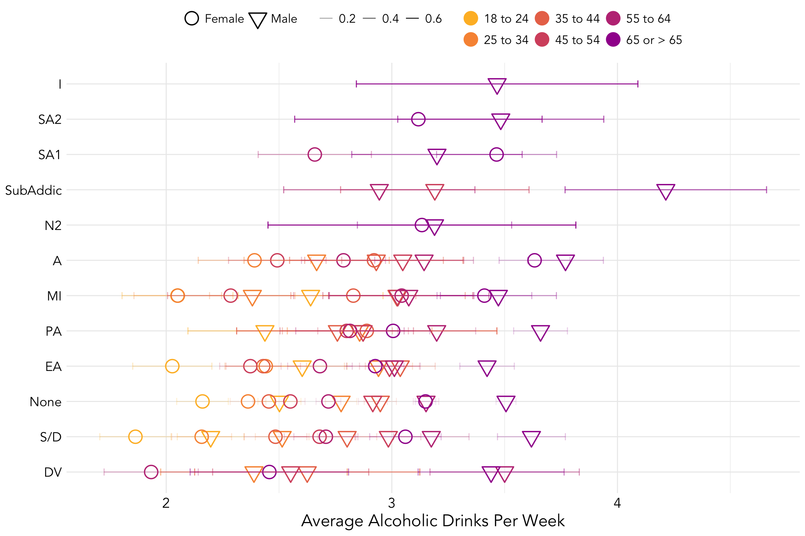
Note. SA2 = sexual abuse 2 (i.e., forced to sexually touch abuser). A = alcohol misuse in household. SubAddic = substance addiction in the household. PA = physical abuse. SA1 = sexual abuse 1 (i.e., molestation). None = respondent did not report any ACE. S/D = parental separation or divorce. MI = mental illness in the household. EA = emotional abuse. I = incarcerated household member. SA3 = sexual abuse 3 (i.e., rape). N1 = neglect 1 (i.e., no adult in household who made them feel safe and protected). N2 = neglect 2 (i.e., no adult in household who tried hard to make sure their basic needs were met). DV = domestic violence in the household.
Figure 2
History of 2 Adverse Childhood Events and Average Days Where Alcohol is Consumed Per Week
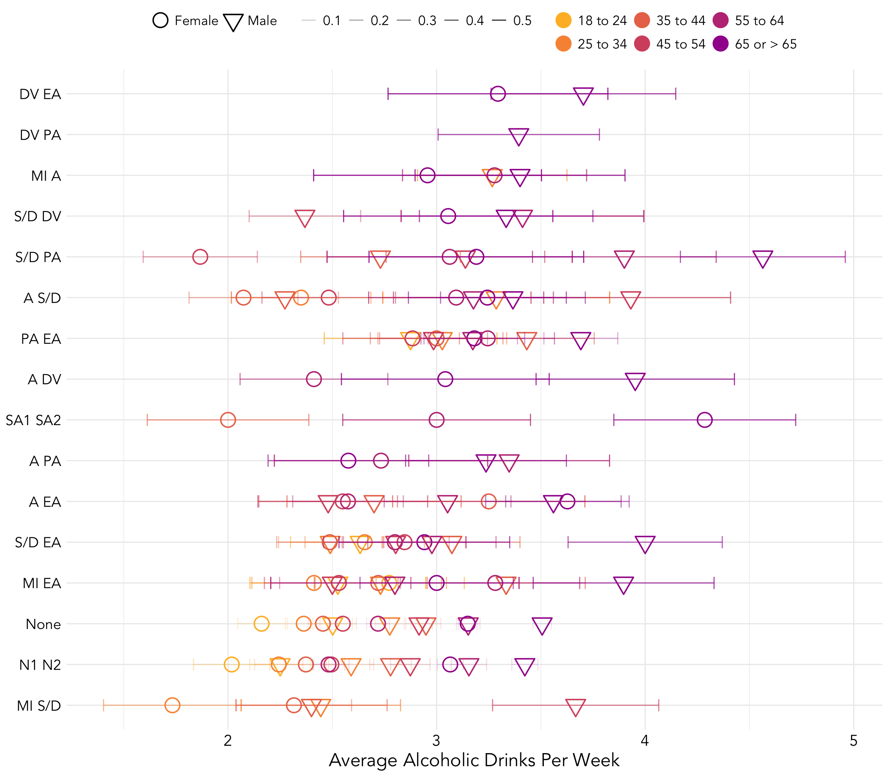
Note. SA2 = sexual abuse 2 (i.e., forced to sexually touch abuser). A = alcohol misuse in household. SubAddic = substance addiction in the household. PA = physical abuse. SA1 = sexual abuse 1 (i.e., molestation). None = respondent did not report any ACE. S/D = parental separation or divorce. MI = mental illness in the household. EA = emotional abuse. I = incarcerated household member. SA3 = sexual abuse 3 (i.e., rape). N1 = neglect 1 (i.e., no adult in household who made them feel safe and protected). N2 = neglect 2 (i.e., no adult in household who tried hard to make sure their basic needs were met). DV = domestic violence in the household.
Figure 3
History of 3 Adverse Childhood Events and Average Days Where Alcohol is Consumed Per Week
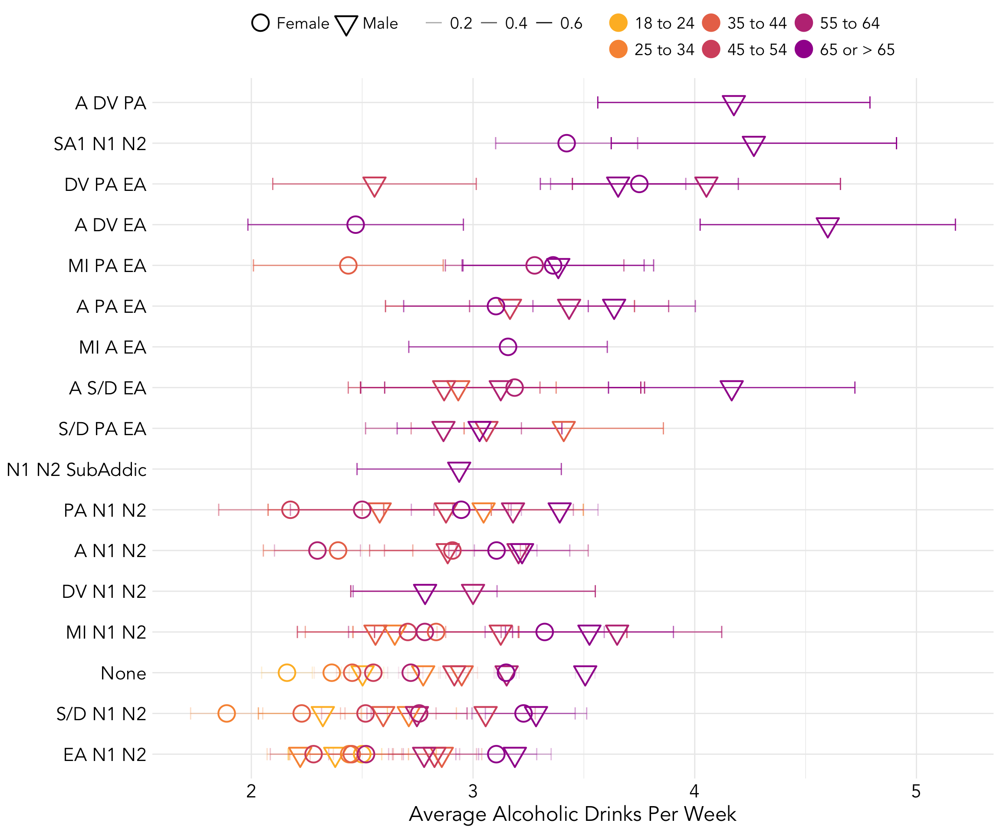
Note. SA2 = sexual abuse 2 (i.e., forced to sexually touch abuser). A = alcohol misuse in household. SubAddic = substance addiction in the household. PA = physical abuse. SA1 = sexual abuse 1 (i.e., molestation). None = respondent did not report any ACE. S/D = parental separation or divorce. MI = mental illness in the household. EA = emotional abuse. I = incarcerated household member. SA3 = sexual abuse 3 (i.e., rape). N1 = neglect 1 (i.e., no adult in household who made them feel safe and protected). N2 = neglect 2 (i.e., no adult in household who tried hard to make sure their basic needs were met). DV = domestic violence in the household.
Figure 4
History of 4 Adverse Childhood Events and Average Days Where Alcohol is Consumed Per Week
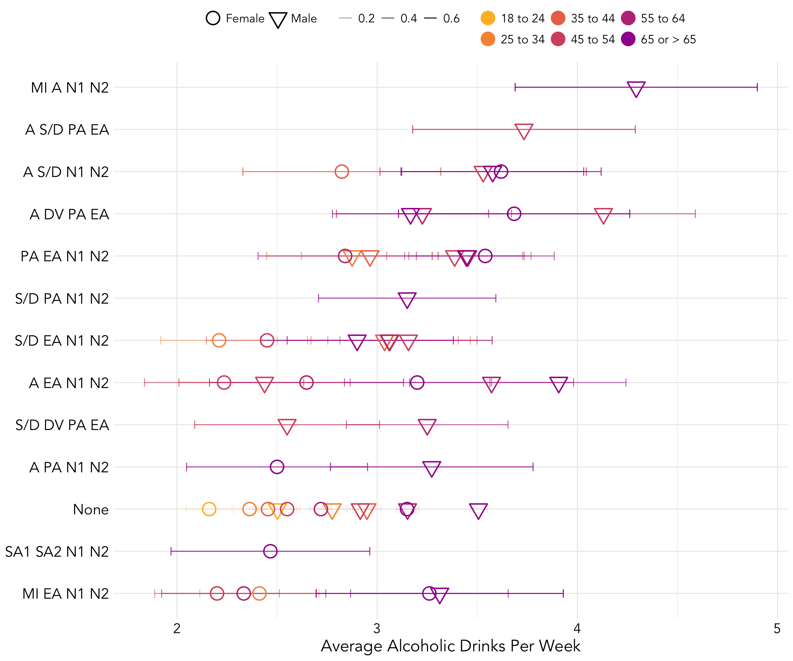
Note. SA2 = sexual abuse 2 (i.e., forced to sexually touch abuser). A = alcohol misuse in household. SubAddic = substance addiction in the household. PA = physical abuse. SA1 = sexual abuse 1 (i.e., molestation). None = respondent did not report any ACE. S/D = parental separation or divorce. MI = mental illness in the household. EA = emotional abuse. I = incarcerated household member. SA3 = sexual abuse 3 (i.e., rape). N1 = neglect 1 (i.e., no adult in household who made them feel safe and protected). N2 = neglect 2 (i.e., no adult in household who tried hard to make sure their basic needs were met). DV = domestic violence in the household.
Figure 5
History of 5 or More Adverse Childhood Events and Average Days Where Alcohol is Consumed Per Week
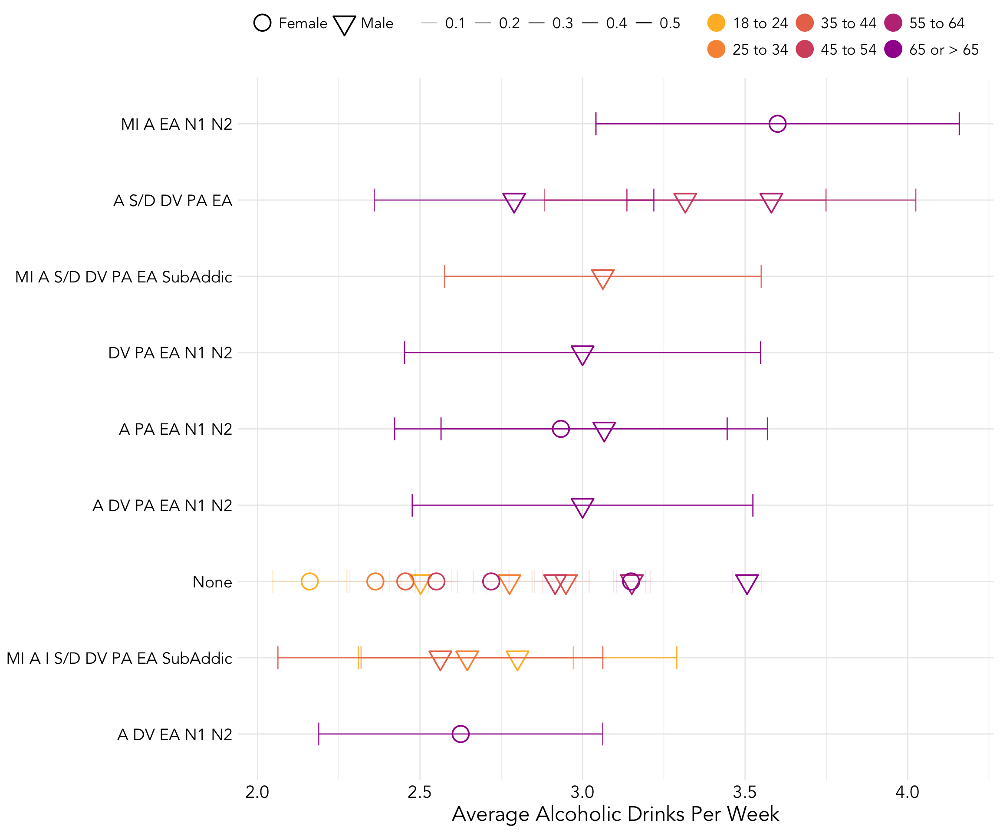
Note. SA2 = sexual abuse 2 (i.e., forced to sexually touch abuser). A = alcohol misuse in household. SubAddic = substance addiction in the household. PA = physical abuse. SA1 = sexual abuse 1 (i.e., molestation). None = respondent did not report any ACE. S/D = parental separation or divorce. MI = mental illness in the household. EA = emotional abuse. I = incarcerated household member. SA3 = sexual abuse 3 (i.e., rape). N1 = neglect 1 (i.e., no adult in household who made them feel safe and protected). N2 = neglect 2 (i.e., no adult in household who tried hard to make sure their basic needs were met). DV = domestic violence in the household.
Alcohol consumption in days per month
The second question refers to the number of days per month the respondent consumes at least one alcoholic drink. This question has been coded in a way that allows the respondent to report if they do not drink alcohol at all which was excluded in this analysis to evaluate if the consumption of alcohol per week differs between those who report a history of early-life stress compared to those who have not.
Interpretation
Those who are female, between the ages of 18-24, and report no history of an ACE report on average drink an alcoholic beverage 5.74 days out of a month (\(\beta_0 = 5.74\), \(SE = 0.35\), \(t = 5.06\), \(p < .00001\)). Those who are male on average do not report any increased or decreased risk for the number of days to consume an alcoholic beverage out of a month compared to females between the ages of 18-24 and report no history of an ACE (\(\beta_1 = 1.25\), \(SE = 0.16\), \(t = 1.42\), \(p = .155\)). Those who are between the ages of 25 to 34 (\(\beta_2 = 0.98\), \(SE = 0.37\), \(t = -0.05\), \(p = .957\)), 35 to 44 (\(\beta_3 = 0.66\), \(SE = 0.40\), \(t = -1.05\), \(p = 0.292\)), 45 to 54 (\(\beta_4 = 1.11\), \(SE = 0.37\), \(t = 0.29\), \(p = .769\)), 55 to 64 (\(\beta_5 = 1.43\), \(SE = 0.35\), \(t = 1.01\), \(p = 0.315\)), or 65 and older (\(\beta_6 = 1.52\), \(SE = 0.34\), \(t = 1.24\), \(p = 0.215\)) do not show any increased risk for the number of days on average to consume alcohol out of the month compared to females between the ages of 18-24 that report no history of an ACE.
Those that reported a history of rape that were also between the ages of 45 to 54 (\(\beta_{78} = 0.60\), \(SE = 0.17\), \(t = -2.95\), \(p = .003\)), or 65 and older (\(\beta_{80} = 0.65\), \(SE = 0.16\), \(t = -2.66\), \(p = .008\)), respectively, were shown to have an on average 0.60 or 0.65 times lower risk for the number of days per month alcohol was consumed per month compared to females between the ages of 18-24 and not history of any ACE. Those that also report the same history of adversity but are between the ages of 25 to 34 or 55 to 64 were not shown to report on average a different number of days per month alcohol is consumed compared to females between the ages of 18-24 and no history of any ACE (see Table 4 for further information).
There were no two-way interactions between males and any of the 13 ACEs that indicated increased or decreased risk for the average number of days per month alcohol was consumed compared to females between the ages of 18-24 and no history of any ACE (see Table 4 for further information). In addition, all other interactions between ACEs and age category were shown not to differ in relative risk for average days to consume alcohol per month compared to females between the ages of 18-24 that report no history of an ACE (see Table 2).
Table 4Estimates for ACE Terms and Interactions
Table
| term | estimate | std.error | statistic | p.value |
|---|---|---|---|---|
| MentalIllness1 | 1.02 | 0.07 | 0.25 | 0.7997453 |
| MentalIllness1:sexMale | 0.95 | 0.03 | -1.52 | 0.1279668 |
| MentalIllness1:age25 to 34 | 1.06 | 0.08 | 0.76 | 0.4443003 |
| MentalIllness1:age35 to 44 | 1.08 | 0.08 | 1.05 | 0.2936810 |
| MentalIllness1:age45 to 54 | 1.07 | 0.08 | 0.83 | 0.4052683 |
| MentalIllness1:age55 to 64 | 1.03 | 0.08 | 0.39 | 0.6934069 |
| MentalIllness1:age65 or > 65 | 1.06 | 0.07 | 0.84 | 0.4020568 |
| Alcoholic1 | 1.17 | 0.08 | 2.04 | 0.0409946 |
| sexMale:Alcoholic1 | 1.01 | 0.03 | 0.24 | 0.8100267 |
| age25 to 34:Alcoholic1 | 0.93 | 0.09 | -0.81 | 0.4166381 |
| age35 to 44:Alcoholic1 | 0.89 | 0.09 | -1.31 | 0.1888475 |
| age45 to 54:Alcoholic1 | 0.98 | 0.08 | -0.30 | 0.7662691 |
| age55 to 64:Alcoholic1 | 0.90 | 0.08 | -1.23 | 0.2175215 |
| age65 or > 65:Alcoholic1 | 0.91 | 0.08 | -1.27 | 0.2039775 |
| SubstanceAddiction1 | 1.07 | 0.09 | 0.76 | 0.4466560 |
| sexMale:SubstanceAddiction1 | 1.05 | 0.05 | 1.04 | 0.2972658 |
| age25 to 34:SubstanceAddiction1 | 0.89 | 0.11 | -1.13 | 0.2568413 |
| age35 to 44:SubstanceAddiction1 | 0.96 | 0.10 | -0.42 | 0.6764367 |
| age45 to 54:SubstanceAddiction1 | 0.87 | 0.10 | -1.33 | 0.1830669 |
| age55 to 64:SubstanceAddiction1 | 1.04 | 0.10 | 0.34 | 0.7306433 |
| age65 or > 65:SubstanceAddiction1 | 0.95 | 0.10 | -0.48 | 0.6299989 |
| Incarcerated1 | 0.99 | 0.09 | -0.06 | 0.9518187 |
| sexMale:Incarcerated1 | 1.00 | 0.05 | 0.07 | 0.9436445 |
| age25 to 34:Incarcerated1 | 1.03 | 0.11 | 0.30 | 0.7660570 |
| age35 to 44:Incarcerated1 | 0.98 | 0.11 | -0.16 | 0.8746580 |
| age45 to 54:Incarcerated1 | 1.01 | 0.11 | 0.12 | 0.9033012 |
| age55 to 64:Incarcerated1 | 0.88 | 0.11 | -1.15 | 0.2499281 |
| age65 or > 65:Incarcerated1 | 1.01 | 0.11 | 0.14 | 0.8906266 |
| SeparationDivorce1 | 0.96 | 0.07 | -0.59 | 0.5533439 |
| sexMale:SeparationDivorce1 | 1.01 | 0.03 | 0.23 | 0.8188698 |
| age25 to 34:SeparationDivorce1 | 0.97 | 0.08 | -0.34 | 0.7307931 |
| age35 to 44:SeparationDivorce1 | 1.08 | 0.07 | 1.09 | 0.2767646 |
| age45 to 54:SeparationDivorce1 | 1.03 | 0.07 | 0.41 | 0.6807284 |
| age55 to 64:SeparationDivorce1 | 1.07 | 0.07 | 0.92 | 0.3554876 |
| age65 or > 65:SeparationDivorce1 | 1.05 | 0.07 | 0.65 | 0.5171808 |
| DomesticViolence1 | 0.89 | 0.09 | -1.37 | 0.1714862 |
| sexMale:DomesticViolence1 | 1.07 | 0.04 | 1.85 | 0.0636285 |
| age25 to 34:DomesticViolence1 | 1.05 | 0.10 | 0.44 | 0.6567417 |
| age35 to 44:DomesticViolence1 | 0.99 | 0.10 | -0.06 | 0.9525967 |
| age45 to 54:DomesticViolence1 | 1.02 | 0.10 | 0.25 | 0.8024837 |
| age55 to 64:DomesticViolence1 | 1.07 | 0.09 | 0.75 | 0.4545815 |
| age65 or > 65:DomesticViolence1 | 1.02 | 0.09 | 0.25 | 0.8004073 |
| PhysicalAbuse1 | 1.03 | 0.08 | 0.40 | 0.6921991 |
| sexMale:PhysicalAbuse1 | 0.98 | 0.03 | -0.60 | 0.5503955 |
| age25 to 34:PhysicalAbuse1 | 1.03 | 0.09 | 0.32 | 0.7501734 |
| age35 to 44:PhysicalAbuse1 | 0.94 | 0.09 | -0.76 | 0.4462888 |
| age45 to 54:PhysicalAbuse1 | 1.03 | 0.08 | 0.33 | 0.7382974 |
| age55 to 64:PhysicalAbuse1 | 1.10 | 0.08 | 1.20 | 0.2303104 |
| age65 or > 65:PhysicalAbuse1 | 1.00 | 0.08 | -0.01 | 0.9889278 |
| EmotionalAbuse1 | 1.05 | 0.07 | 0.77 | 0.4441457 |
| sexMale:EmotionalAbuse1 | 1.02 | 0.03 | 0.53 | 0.5939960 |
| age25 to 34:EmotionalAbuse1 | 0.94 | 0.08 | -0.73 | 0.4682233 |
| age35 to 44:EmotionalAbuse1 | 1.05 | 0.08 | 0.69 | 0.4890519 |
| age45 to 54:EmotionalAbuse1 | 0.98 | 0.08 | -0.32 | 0.7499410 |
| age55 to 64:EmotionalAbuse1 | 0.95 | 0.07 | -0.73 | 0.4637410 |
| age65 or > 65:EmotionalAbuse1 | 0.97 | 0.07 | -0.41 | 0.6789239 |
| SexualAbuse11 | 1.10 | 0.15 | 0.65 | 0.5171426 |
| sexMale:SexualAbuse11 | 1.04 | 0.06 | 0.62 | 0.5380129 |
| age25 to 34:SexualAbuse11 | 0.77 | 0.18 | -1.44 | 0.1506103 |
| age35 to 44:SexualAbuse11 | 0.94 | 0.17 | -0.39 | 0.6952884 |
| age45 to 54:SexualAbuse11 | 0.96 | 0.16 | -0.28 | 0.7766796 |
| age55 to 64:SexualAbuse11 | 0.91 | 0.16 | -0.63 | 0.5276533 |
| age65 or > 65:SexualAbuse11 | 0.92 | 0.15 | -0.55 | 0.5791860 |
| SexualAbuse21 | 0.86 | 0.17 | -0.86 | 0.3879519 |
| sexMale:SexualAbuse21 | 1.02 | 0.06 | 0.38 | 0.7067364 |
| age25 to 34:SexualAbuse21 | 1.54 | 0.20 | 2.18 | 0.0290077 |
| age35 to 44:SexualAbuse21 | 1.18 | 0.19 | 0.87 | 0.3841571 |
| age45 to 54:SexualAbuse21 | 1.23 | 0.18 | 1.13 | 0.2572029 |
| age55 to 64:SexualAbuse21 | 1.18 | 0.18 | 0.91 | 0.3606261 |
| age65 or > 65:SexualAbuse21 | 1.20 | 0.17 | 1.03 | 0.3039261 |
| SexualAbuse31 | 1.31 | 0.15 | 1.79 | 0.0739838 |
| sexMale:SexualAbuse31 | 1.11 | 0.07 | 1.46 | 0.1447136 |
| age25 to 34:SexualAbuse31 | 0.64 | 0.18 | -2.50 | 0.0125584 |
| age35 to 44:SexualAbuse31 | 0.78 | 0.17 | -1.47 | 0.1419975 |
| age45 to 54:SexualAbuse31 | 0.60 | 0.17 | -2.95 | 0.0031994 |
| age55 to 64:SexualAbuse31 | 0.68 | 0.17 | -2.31 | 0.0206804 |
| age65 or > 65:SexualAbuse31 | 0.65 | 0.16 | -2.66 | 0.0079257 |
| Neglect11 | 1.32 | 0.21 | 1.33 | 0.1830738 |
| sexMale:Neglect11 | 0.88 | 0.09 | -1.47 | 0.1419385 |
| age25 to 34:Neglect11 | 0.81 | 0.23 | -0.92 | 0.3561711 |
| age35 to 44:Neglect11 | 0.85 | 0.23 | -0.72 | 0.4687265 |
| age45 to 54:Neglect11 | 0.86 | 0.23 | -0.68 | 0.4956853 |
| age55 to 64:Neglect11 | 1.04 | 0.23 | 0.16 | 0.8695579 |
| age65 or > 65:Neglect11 | 0.82 | 0.21 | -0.94 | 0.3471280 |
| Neglect21 | 0.58 | 0.35 | -1.53 | 0.1250465 |
| sexMale:Neglect21 | 1.30 | 0.16 | 1.68 | 0.0928599 |
| age25 to 34:Neglect21 | 1.63 | 0.38 | 1.28 | 0.2012412 |
| age35 to 44:Neglect21 | 2.36 | 0.40 | 2.13 | 0.0329828 |
| age45 to 54:Neglect21 | 1.46 | 0.38 | 1.01 | 0.3115467 |
| age55 to 64:Neglect21 | 1.05 | 0.36 | 0.13 | 0.8968641 |
| age65 or > 65:Neglect21 | 1.51 | 0.34 | 1.20 | 0.2310105 |
Discussion
Interestingly, Figures 6 shows those with only a history of parental separation or divorce, physical abuse, or domestic violence report on average fewer days were alcohol is consumed per month compared to those that report no history of any ACE which is shown to continue as a trend in Figure 6, 7, 8, 9, and 10.
Figure 6
History of 1 Adverse Childhood Event and Average Days Where Alcohol is Consumed Per Month
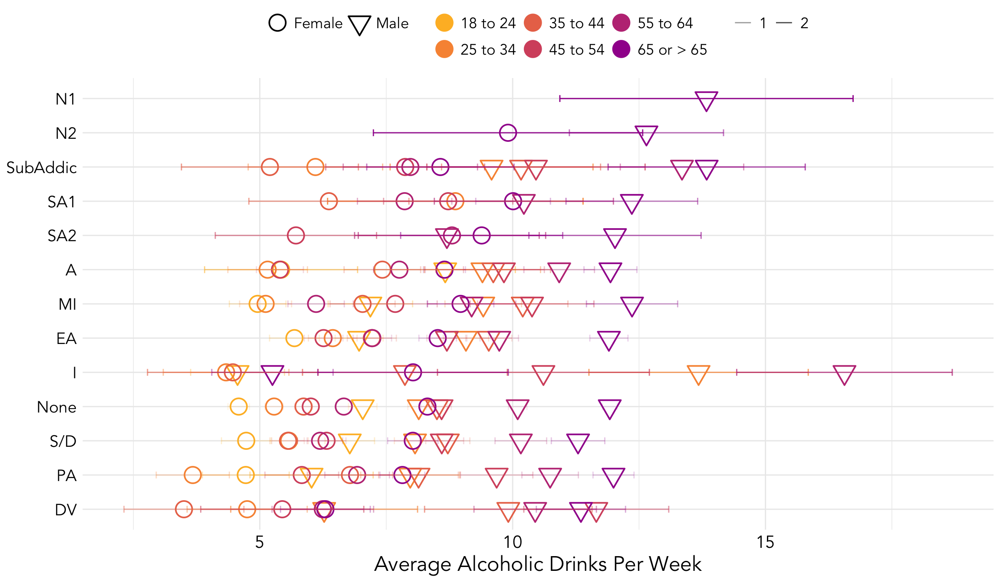
Note. SA2 = sexual abuse 2 (i.e., forced to sexually touch abuser). A = alcohol misuse in household. SubAddic = substance addiction in the household. PA = physical abuse. SA1 = sexual abuse 1 (i.e., molestation). None = respondent did not report any ACE. S/D = parental separation or divorce. MI = mental illness in the household. EA = emotional abuse. I = incarcerated household member. SA3 = sexual abuse 3 (i.e., rape). N1 = neglect 1 (i.e., no adult in household who made them feel safe and protected). N2 = neglect 2 (i.e., no adult in household who tried hard to make sure their basic needs were met). DV = domestic violence in the household.
Figure 7
History of 2 Adverse Childhood Events and Average Days Where Alcohol is Consumed Per Month
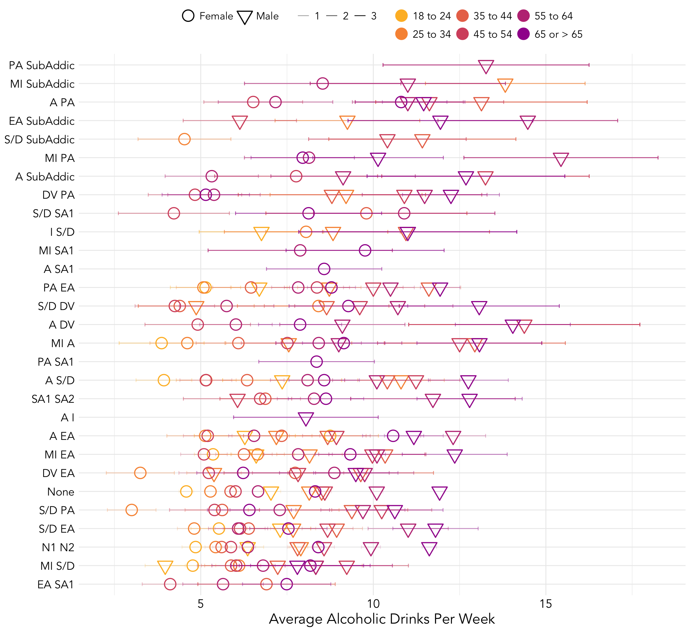
Note. SA2 = sexual abuse 2 (i.e., forced to sexually touch abuser). A = alcohol misuse in household. SubAddic = substance addiction in the household. PA = physical abuse. SA1 = sexual abuse 1 (i.e., molestation). None = respondent did not report any ACE. S/D = parental separation or divorce. MI = mental illness in the household. EA = emotional abuse. I = incarcerated household member. SA3 = sexual abuse 3 (i.e., rape). N1 = neglect 1 (i.e., no adult in household who made them feel safe and protected). N2 = neglect 2 (i.e., no adult in household who tried hard to make sure their basic needs were met). DV = domestic violence in the household.
Figure 8
History of 2 Adverse Childhood Events and Average Days Where Alcohol is Consumed Per Month
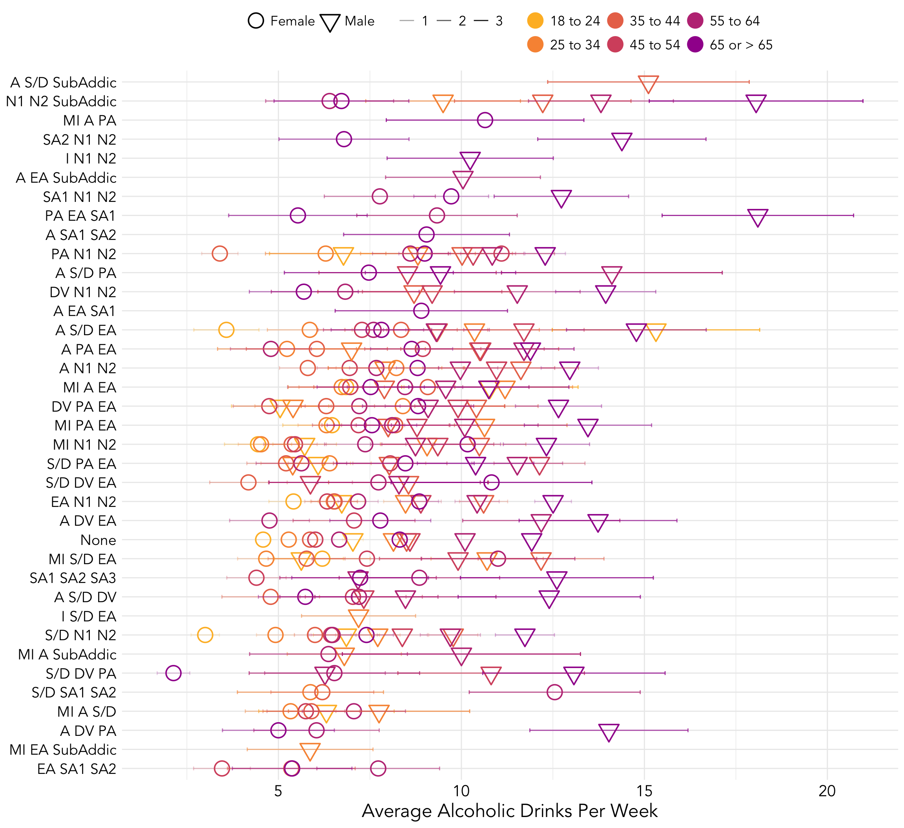
Note. SA2 = sexual abuse 2 (i.e., forced to sexually touch abuser). A = alcohol misuse in household. SubAddic = substance addiction in the household. PA = physical abuse. SA1 = sexual abuse 1 (i.e., molestation). None = respondent did not report any ACE. S/D = parental separation or divorce. MI = mental illness in the household. EA = emotional abuse. I = incarcerated household member. SA3 = sexual abuse 3 (i.e., rape). N1 = neglect 1 (i.e., no adult in household who made them feel safe and protected). N2 = neglect 2 (i.e., no adult in household who tried hard to make sure their basic needs were met). DV = domestic violence in the household.
Figure 9
History of 3 Adverse Childhood Events and Average Days Where Alcohol is Consumed Per Month
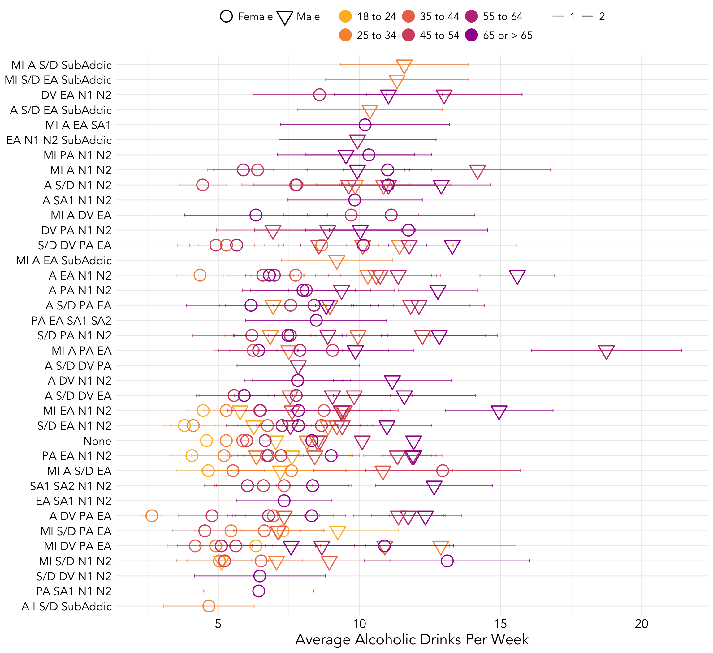
Note. SA2 = sexual abuse 2 (i.e., forced to sexually touch abuser). A = alcohol misuse in household. SubAddic = substance addiction in the household. PA = physical abuse. SA1 = sexual abuse 1 (i.e., molestation). None = respondent did not report any ACE. S/D = parental separation or divorce. MI = mental illness in the household. EA = emotional abuse. I = incarcerated household member. SA3 = sexual abuse 3 (i.e., rape). N1 = neglect 1 (i.e., no adult in household who made them feel safe and protected). N2 = neglect 2 (i.e., no adult in household who tried hard to make sure their basic needs were met). DV = domestic violence in the household.
Figure 10
History of 4 Adverse Childhood Events and Average Days Where Alcohol is Consumed Per Month
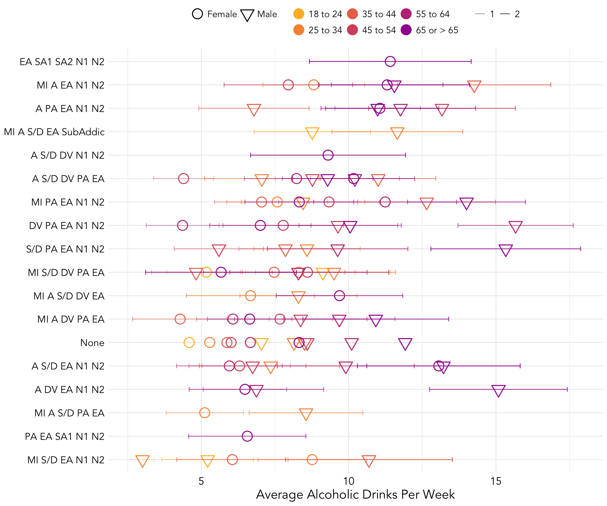
Note. SA2 = sexual abuse 2 (i.e., forced to sexually touch abuser). A = alcohol misuse in household. SubAddic = substance addiction in the household. PA = physical abuse. SA1 = sexual abuse 1 (i.e., molestation). None = respondent did not report any ACE. S/D = parental separation or divorce. MI = mental illness in the household. EA = emotional abuse. I = incarcerated household member. SA3 = sexual abuse 3 (i.e., rape). N1 = neglect 1 (i.e., no adult in household who made them feel safe and protected). N2 = neglect 2 (i.e., no adult in household who tried hard to make sure their basic needs were met). DV = domestic violence in the household.
Figure 11
History of 5 or More Adverse Childhood Events and Average Days Where Alcohol is Consumed Per Month
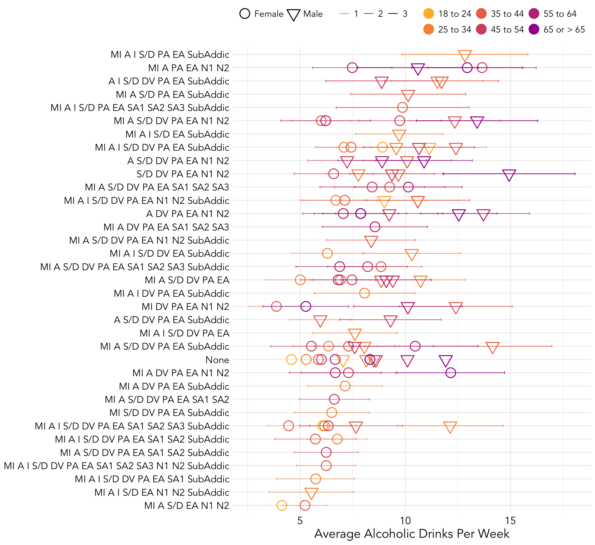
Note. SA2 = sexual abuse 2 (i.e., forced to sexually touch abuser). A = alcohol misuse in household. SubAddic = substance addiction in the household. PA = physical abuse. SA1 = sexual abuse 1 (i.e., molestation). None = respondent did not report any ACE. S/D = parental separation or divorce. MI = mental illness in the household. EA = emotional abuse. I = incarcerated household member. SA3 = sexual abuse 3 (i.e., rape). N1 = neglect 1 (i.e., no adult in household who made them feel safe and protected). N2 = neglect 2 (i.e., no adult in household who tried hard to make sure their basic needs were met). DV = domestic violence in the household.
Occasions of binge drinking in the past month
The third question refers to the number of occasions in the past month where 5 or more alcoholic drinks are consumed if male or 4 or more alcoholic drinks are consumed if female. The CDC classifies 4 or more for females and 5 or more for males as excessive alcohol use or binge drinking. This question was only asked if the respondent indicated they consumed alcohol.
Interpretation
In a month females 65 and older with no history of any ACE on average are shown to drink 4 or more alcoholic drinks on 6.85 occasions (\(\beta_0 = 6.85\), \(SE = 0.28\), \(t = 6.83\), \(p < .000001\)). Those who report being a male are not shown to have any increased or decreased risk for the number of occasions where 5 or more drinks are consumed compared to females 65 and older with no history of any ACE (\(\beta_1 = 1.06\), \(SE = 0.23\), \(t = 0.23\), \(p = .605\)).
Those that report being between the ages of 18 to 24 (\(\beta_6 = 1.80\), \(SE = 0.34\), \(t = 1.70\), \(p = .089\)), 25 to 34 (\(\beta_2 = 0.59\), \(SE = 0.31\), \(t = -1.69\), \(p = .092\)), 35 to 44 (\(\beta_3 = 0.48\), \(SE = 0.36\), \(t = -2.02\), \(p = .043\)), 45 to 54 (\(\beta_4 = 0.59\), \(SE = 0.34\), \(t = -1.56\), \(p = 0.118\)), or 55 to 64 (\(\beta_5 = 1.03\), \(SE = 0.32\), \(t = 0.10\), \(p = .922\)) are not shown to differ in occasions per month where binge drinking is observed compared to those that are females 65 and older with no history of any ACE.
Those that are male and report a history of sexual assault (someone sexually touching the respondent) are shown to have 1.36 times more occasions per month where the person is binge drinking compared to females 65 and older with no history of any ACE (\(\beta_{68} = 1.36\), \(SE = 0.11\), \(t = 2.81\), \(p = .005\)). Those who report being male along with a history of either mental illness in the household, or alcohol misuse in the household, or substance addiction in the household, or a history of someone forcing the respondent to touch someone else sexually, or having a household member incarcerated, or parental separation or divorce, or domestic violence in the household, or physical abuse, or emotional abuse, or rape, or neglect of any kind, were not seen to increase or decrease occasions per month where the person is binge drinking compared to females 65 and older with no history of any ACE (see Table 5 for further information).
Those that report a history of emotional abuse and that are also between the ages of 55 to 64 (\(\beta_{59} = 1.28\), \(SE = 0.09\), \(t = 2.69\), \(p = .007\)) are shown to have 1.28 times more occasions per month where the person is binge drinking compared to females 65 and older with no history of any ACE, but those between the ages of 18 to 24, or 25 to 34, or 35 to 44, or 45 to 54 are not shown to effect the number of occasions per month where binge drinking occurs compared to females 65 and older with no history of any ACE (see Table 5 for further information).
Those that report no adult in your household who tried hard to make sure their basic needs were met (i.e., Neglect2) that were also between the ages of 18 to 24 were shown to have 0.37 times lower number of occasions per month where the person was binge drinking compared to females 65 and older with no history of any ACE (\(\beta_{95} = 0.37\), \(SE = 0.35\), \(t = -2.82\), \(p = .005\)). The interaction between this ACE and other age category were not shown to effect the number of occasions per month where binge drinking occurs compared to females 65 and older with no history of any ACE (see Table 5 for further information).
All other interactions between the other 10 ACEs and age categories were shown not to differ in relative risk for average occasions to binge drink in the past month compared to females 65 and older that report no history of an ACE (see Table 5 for further information).
Table 5
Estimates for ACE Terms and Interactions
Table
| term | estimate | std.error | statistic | p.value |
|---|---|---|---|---|
| MentalIllness1 | 0.95 | 0.11 | -0.52 | 0.6045047 |
| MentalIllness1:sexMale | 0.97 | 0.07 | -0.49 | 0.6253371 |
| MentalIllness1:age55 to 64 | 1.30 | 0.13 | 2.09 | 0.0364876 |
| MentalIllness1:age45 to 54 | 1.15 | 0.12 | 1.12 | 0.2631564 |
| MentalIllness1:age35 to 44 | 1.13 | 0.12 | 1.05 | 0.2919040 |
| MentalIllness1:age25 to 34 | 1.08 | 0.12 | 0.59 | 0.5532210 |
| MentalIllness1:age18 to 24 | 1.08 | 0.14 | 0.56 | 0.5755820 |
| Alcoholic1 | 1.23 | 0.08 | 2.48 | 0.0129893 |
| sexMale:Alcoholic1 | 1.03 | 0.06 | 0.45 | 0.6523434 |
| age55 to 64:Alcoholic1 | 0.88 | 0.10 | -1.34 | 0.1794802 |
| age45 to 54:Alcoholic1 | 0.89 | 0.10 | -1.14 | 0.2524945 |
| age35 to 44:Alcoholic1 | 0.82 | 0.10 | -1.96 | 0.0497948 |
| age25 to 34:Alcoholic1 | 0.99 | 0.10 | -0.07 | 0.9446615 |
| age18 to 24:Alcoholic1 | 0.98 | 0.13 | -0.19 | 0.8471420 |
| SubstanceAddiction1 | 1.23 | 0.13 | 1.63 | 0.1034136 |
| sexMale:SubstanceAddiction1 | 0.91 | 0.08 | -1.14 | 0.2547600 |
| age55 to 64:SubstanceAddiction1 | 0.89 | 0.15 | -0.75 | 0.4522852 |
| age45 to 54:SubstanceAddiction1 | 0.99 | 0.15 | -0.08 | 0.9401698 |
| age35 to 44:SubstanceAddiction1 | 0.86 | 0.14 | -1.04 | 0.2995278 |
| age25 to 34:SubstanceAddiction1 | 0.87 | 0.15 | -0.96 | 0.3374740 |
| age18 to 24:SubstanceAddiction1 | 0.88 | 0.17 | -0.74 | 0.4610097 |
| Incarcerated1 | 1.24 | 0.15 | 1.41 | 0.1583067 |
| sexMale:Incarcerated1 | 1.12 | 0.09 | 1.23 | 0.2201420 |
| age55 to 64:Incarcerated1 | 0.73 | 0.18 | -1.77 | 0.0772267 |
| age45 to 54:Incarcerated1 | 0.77 | 0.17 | -1.53 | 0.1250881 |
| age35 to 44:Incarcerated1 | 0.88 | 0.16 | -0.81 | 0.4185404 |
| age25 to 34:Incarcerated1 | 0.97 | 0.16 | -0.19 | 0.8519357 |
| age18 to 24:Incarcerated1 | 0.80 | 0.19 | -1.19 | 0.2355937 |
| SeparationDivorce1 | 1.01 | 0.09 | 0.13 | 0.8962249 |
| sexMale:SeparationDivorce1 | 0.96 | 0.06 | -0.62 | 0.5365945 |
| age55 to 64:SeparationDivorce1 | 1.24 | 0.10 | 2.04 | 0.0417021 |
| age45 to 54:SeparationDivorce1 | 1.00 | 0.10 | 0.04 | 0.9665658 |
| age35 to 44:SeparationDivorce1 | 1.05 | 0.10 | 0.53 | 0.5986629 |
| age25 to 34:SeparationDivorce1 | 1.01 | 0.11 | 0.06 | 0.9499373 |
| age18 to 24:SeparationDivorce1 | 0.97 | 0.12 | -0.21 | 0.8298110 |
| DomesticViolence1 | 0.92 | 0.11 | -0.76 | 0.4454244 |
| sexMale:DomesticViolence1 | 0.99 | 0.07 | -0.18 | 0.8539444 |
| age55 to 64:DomesticViolence1 | 1.07 | 0.12 | 0.54 | 0.5915686 |
| age45 to 54:DomesticViolence1 | 1.12 | 0.12 | 0.95 | 0.3426742 |
| age35 to 44:DomesticViolence1 | 1.14 | 0.12 | 1.08 | 0.2817809 |
| age25 to 34:DomesticViolence1 | 0.99 | 0.13 | -0.07 | 0.9461055 |
| age18 to 24:DomesticViolence1 | 0.89 | 0.15 | -0.77 | 0.4437516 |
| PhysicalAbuse1 | 1.02 | 0.09 | 0.18 | 0.8552354 |
| sexMale:PhysicalAbuse1 | 1.05 | 0.07 | 0.80 | 0.4226329 |
| age55 to 64:PhysicalAbuse1 | 0.99 | 0.10 | -0.15 | 0.8813659 |
| age45 to 54:PhysicalAbuse1 | 1.12 | 0.10 | 1.15 | 0.2505971 |
| age35 to 44:PhysicalAbuse1 | 0.94 | 0.10 | -0.63 | 0.5314782 |
| age25 to 34:PhysicalAbuse1 | 1.23 | 0.10 | 1.98 | 0.0475147 |
| age18 to 24:PhysicalAbuse1 | 1.11 | 0.13 | 0.79 | 0.4304223 |
| EmotionalAbuse1 | 0.86 | 0.08 | -1.78 | 0.0745504 |
| sexMale:EmotionalAbuse1 | 1.01 | 0.06 | 0.11 | 0.9094358 |
| age55 to 64:EmotionalAbuse1 | 1.28 | 0.09 | 2.68 | 0.0074265 |
| age45 to 54:EmotionalAbuse1 | 1.26 | 0.09 | 2.52 | 0.0118429 |
| age35 to 44:EmotionalAbuse1 | 1.24 | 0.09 | 2.31 | 0.0209111 |
| age25 to 34:EmotionalAbuse1 | 1.16 | 0.10 | 1.46 | 0.1432695 |
| age18 to 24:EmotionalAbuse1 | 1.11 | 0.12 | 0.89 | 0.3727485 |
| SexualAbuse11 | 0.97 | 0.14 | -0.20 | 0.8390473 |
| sexMale:SexualAbuse11 | 1.36 | 0.11 | 2.81 | 0.0049145 |
| age55 to 64:SexualAbuse11 | 0.90 | 0.17 | -0.62 | 0.5340018 |
| age45 to 54:SexualAbuse11 | 1.15 | 0.17 | 0.84 | 0.3994274 |
| age35 to 44:SexualAbuse11 | 0.98 | 0.18 | -0.09 | 0.9312144 |
| age25 to 34:SexualAbuse11 | 1.02 | 0.20 | 0.12 | 0.9066515 |
| age18 to 24:SexualAbuse11 | 0.90 | 0.25 | -0.41 | 0.6845509 |
| SexualAbuse21 | 1.46 | 0.16 | 2.39 | 0.0166360 |
| sexMale:SexualAbuse21 | 0.80 | 0.12 | -1.86 | 0.0626802 |
| age55 to 64:SexualAbuse21 | 0.81 | 0.20 | -1.04 | 0.2972842 |
| age45 to 54:SexualAbuse21 | 0.74 | 0.19 | -1.52 | 0.1280357 |
| age35 to 44:SexualAbuse21 | 1.00 | 0.20 | -0.02 | 0.9830299 |
| age25 to 34:SexualAbuse21 | 1.03 | 0.21 | 0.15 | 0.8820300 |
| age18 to 24:SexualAbuse21 | 0.89 | 0.28 | -0.40 | 0.6912434 |
| SexualAbuse31 | 1.11 | 0.19 | 0.55 | 0.5828948 |
| sexMale:SexualAbuse31 | 0.94 | 0.13 | -0.50 | 0.6161484 |
| age55 to 64:SexualAbuse31 | 0.83 | 0.24 | -0.78 | 0.4350715 |
| age45 to 54:SexualAbuse31 | 1.01 | 0.22 | 0.05 | 0.9637962 |
| age35 to 44:SexualAbuse31 | 0.99 | 0.23 | -0.05 | 0.9568961 |
| age25 to 34:SexualAbuse31 | 0.64 | 0.24 | -1.85 | 0.0637591 |
| age18 to 24:SexualAbuse31 | 1.04 | 0.27 | 0.15 | 0.8829949 |
| Neglect11 | 0.68 | 0.21 | -1.87 | 0.0615613 |
| sexMale:Neglect11 | 1.32 | 0.17 | 1.63 | 0.1034469 |
| age55 to 64:Neglect11 | 1.55 | 0.26 | 1.67 | 0.0945568 |
| age45 to 54:Neglect11 | 1.08 | 0.24 | 0.34 | 0.7362273 |
| age35 to 44:Neglect11 | 1.75 | 0.26 | 2.17 | 0.0300673 |
| age25 to 34:Neglect11 | 1.10 | 0.25 | 0.39 | 0.6993471 |
| age18 to 24:Neglect11 | 1.06 | 0.27 | 0.21 | 0.8334310 |
| Neglect21 | 0.84 | 0.31 | -0.55 | 0.5804651 |
| sexMale:Neglect21 | 1.04 | 0.24 | 0.16 | 0.8697309 |
| age55 to 64:Neglect21 | 0.55 | 0.33 | -1.83 | 0.0666285 |
| age45 to 54:Neglect21 | 1.27 | 0.37 | 0.65 | 0.5154441 |
| age35 to 44:Neglect21 | 1.00 | 0.38 | 0.01 | 0.9947447 |
| age25 to 34:Neglect21 | 1.02 | 0.35 | 0.05 | 0.9623147 |
| age18 to 24:Neglect21 | 0.37 | 0.35 | -2.82 | 0.0047503 |
Discussion
Figure 12, 13, 14, 15, 16, and 17 demonstrate relatively similar behavior for occasions per month where binge drinking occurs with those that report a history of any ACEs typically having the lowest number of occasions of binge drinking per month.
Figure 12
History of 1 Adverse Childhood Event and Average Occasions of Binge Drinking Per Month
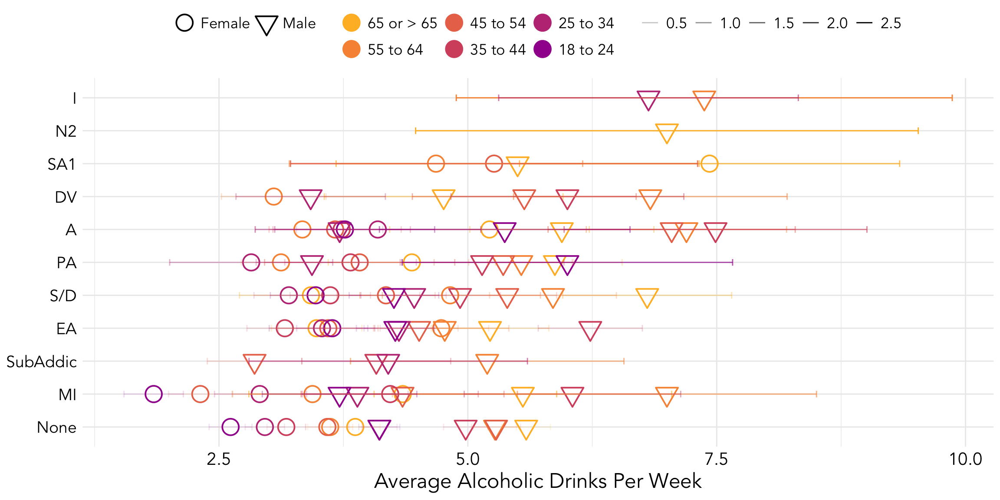
Note. SA2 = sexual abuse 2 (i.e., forced to sexually touch abuser). A = alcohol misuse in household. SubAddic = substance addiction in the household. PA = physical abuse. SA1 = sexual abuse 1 (i.e., molestation). None = respondent did not report any ACE. S/D = parental separation or divorce. MI = mental illness in the household. EA = emotional abuse. I = incarcerated household member. SA3 = sexual abuse 3 (i.e., rape). N1 = neglect 1 (i.e., no adult in household who made them feel safe and protected). N2 = neglect 2 (i.e., no adult in household who tried hard to make sure their basic needs were met). DV = domestic violence in the household.
Figure 13
History of 2 Adverse Childhood Events and Average Occasions of Binge Drinking Per Month
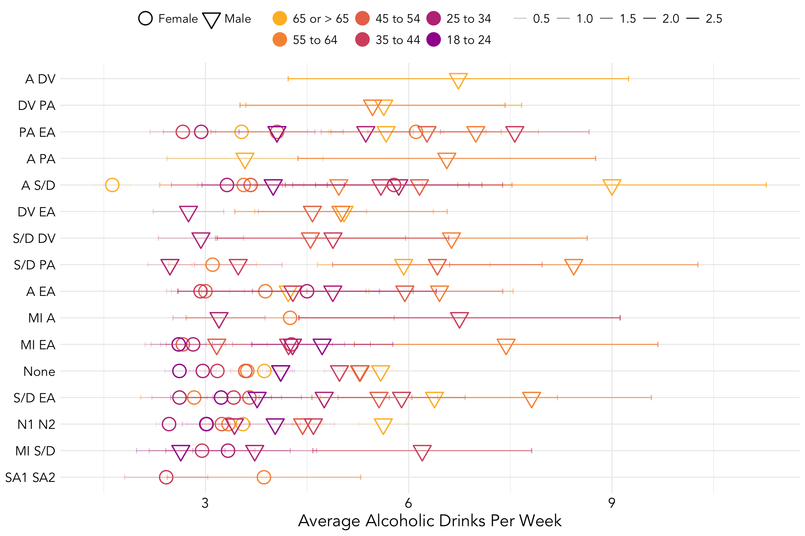
Note. SA2 = sexual abuse 2 (i.e., forced to sexually touch abuser). A = alcohol misuse in household. SubAddic = substance addiction in the household. PA = physical abuse. SA1 = sexual abuse 1 (i.e., molestation). None = respondent did not report any ACE. S/D = parental separation or divorce. MI = mental illness in the household. EA = emotional abuse. I = incarcerated household member. SA3 = sexual abuse 3 (i.e., rape). N1 = neglect 1 (i.e., no adult in household who made them feel safe and protected). N2 = neglect 2 (i.e., no adult in household who tried hard to make sure their basic needs were met). DV = domestic violence in the household.
Figure 14
History of 3 Adverse Childhood Events and Average Occasions of Binge Drinking Per Month
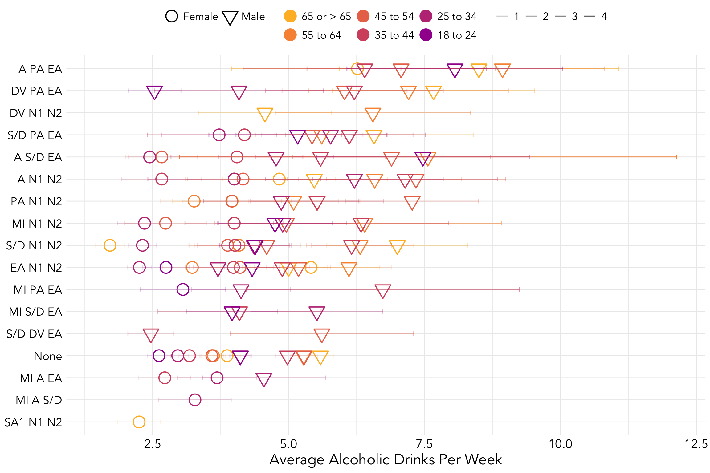
Note. SA2 = sexual abuse 2 (i.e., forced to sexually touch abuser). A = alcohol misuse in household. SubAddic = substance addiction in the household. PA = physical abuse. SA1 = sexual abuse 1 (i.e., molestation). None = respondent did not report any ACE. S/D = parental separation or divorce. MI = mental illness in the household. EA = emotional abuse. I = incarcerated household member. SA3 = sexual abuse 3 (i.e., rape). N1 = neglect 1 (i.e., no adult in household who made them feel safe and protected). N2 = neglect 2 (i.e., no adult in household who tried hard to make sure their basic needs were met). DV = domestic violence in the household.
Figure 15
History of 4 Adverse Childhood Events and Average Occasions of Binge Drinking Per Month
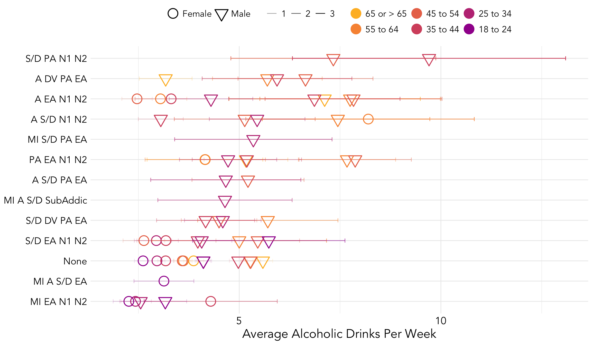
Note. SA2 = sexual abuse 2 (i.e., forced to sexually touch abuser). A = alcohol misuse in household. SubAddic = substance addiction in the household. PA = physical abuse. SA1 = sexual abuse 1 (i.e., molestation). None = respondent did not report any ACE. S/D = parental separation or divorce. MI = mental illness in the household. EA = emotional abuse. I = incarcerated household member. SA3 = sexual abuse 3 (i.e., rape). N1 = neglect 1 (i.e., no adult in household who made them feel safe and protected). N2 = neglect 2 (i.e., no adult in household who tried hard to make sure their basic needs were met). DV = domestic violence in the household.
Figure 16
History of 5 Adverse Childhood Events and Average Occasions of Binge Drinking Per Month
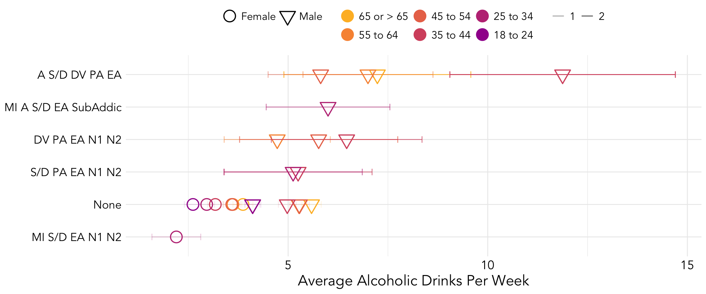
Note. SA2 = sexual abuse 2 (i.e., forced to sexually touch abuser). A = alcohol misuse in household. SubAddic = substance addiction in the household. PA = physical abuse. SA1 = sexual abuse 1 (i.e., molestation). None = respondent did not report any ACE. S/D = parental separation or divorce. MI = mental illness in the household. EA = emotional abuse. I = incarcerated household member. SA3 = sexual abuse 3 (i.e., rape). N1 = neglect 1 (i.e., no adult in household who made them feel safe and protected). N2 = neglect 2 (i.e., no adult in household who tried hard to make sure their basic needs were met). DV = domestic violence in the household.
Figure 17
History of 6 or More Adverse Childhood Events and Average Occasions of Binge Drinking Per Month
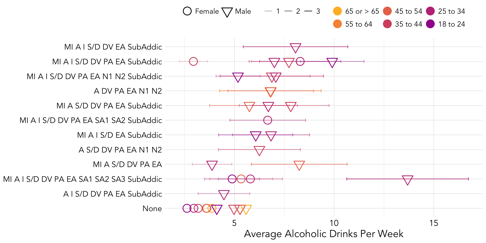
Note. SA2 = sexual abuse 2 (i.e., forced to sexually touch abuser). A = alcohol misuse in household. SubAddic = substance addiction in the household. PA = physical abuse. SA1 = sexual abuse 1 (i.e., molestation). None = respondent did not report any ACE. S/D = parental separation or divorce. MI = mental illness in the household. EA = emotional abuse. I = incarcerated household member. SA3 = sexual abuse 3 (i.e., rape). N1 = neglect 1 (i.e., no adult in household who made them feel safe and protected). N2 = neglect 2 (i.e., no adult in household who tried hard to make sure their basic needs were met). DV = domestic violence in the household.
Maximum number of drinks on any occasion in the past month
The fourth question refers to the largest number of drinks consumed in one occasion in the past month. This question, like the previous, is only asked to respondents that indicate they consume alcohol.
Interpretation
Those that were males 65 and older that report no history of any ACE in the past month that the largest average number of alcoholic drinks consumed on an occasion in the past month was 3.36 (\(\beta_{0} = 3.36\), \(SE = 0.09\), \(t = 13.52\), \(p < .000001\)). Females overall did not report on average any different maximum number of drinks on an occasion in the past month compared to males 65 and older that report no history of any ACE (\(\beta_1 = 0.57\), \(SE = 0.22\), \(t = -2.50\), \(p = .012\)). Those that were female and were also between the ages of 18 to 24, or 25 to 34, or 45 to 54, or 55 to 64, were not shown to report on average any differently compared to males 65 and older that report no history of any ACE for the maximum number of drinks consumed on an occasion in the past month (see Table 6 for further information).
Those that were between the ages of 18 to 24 were shown to report on average 3.21 times more maximum number of drinks on an occasion compared to males 65 and older that report no history of any ACE (\(\beta_2 = 3.21\), \(SE = 0.16\), \(t = 7.18\), \(p < .000001\)). Those that were between the ages of 25 to 34 were shown to report on average 1.89 times more maximum number of drinks on an occasion compared to males 65 and older that report no history of any ACE (\(\beta_3 = 1.89\), \(SE = 0.13\), \(t = 4.78\), \(p < .00001\)). In addition, those that were either between the ages of 35 to 44 (\(\beta_4 = 1.15\), \(SE = 0.17\), \(t = 0.82\), \(p = .409\)), or 45 to 54 (\(\beta_5 = 0.97\), \(SE = 0.17\), \(t = -0.18\), \(p = .854\)), or 55 to 64 (\(\beta_6 = 1.30\), \(SE = 0.16\), \(t = 1.66\), \(p = .097\)) were not shown to differ in the average maximum number of alcoholic drinks consumed in the past month compared to males 65 and older that report no history of any ACE.
Those that report a history of parental separation or divorce were shown to have 1.11 times higher maximum number of drinks on an occasion compared to males 65 and older that report no history of any ACE (\(\beta_{55} = 1.11\), \(SE = 0.03\), \(t = 3.25\), \(p = .001\)). Those that reported a history of parental separation or divorce and that were also between the ages of 35 to 44 (\(\beta_{59} = 0.89\), \(SE = 0.04\), \(t = -2.86\), \(p = .004\)) or 45 to 54 (\(\beta_{60} = 0.84\), \(SE = 0.04\), \(t = -4.10\), \(p < .0001\)), respectfully, were shown to have on average 0.89 or 0.84 times fewer maximum number of drinks on an occasion in the past month compared to males 65 and older that report no history of any ACE. No other two-way or three-way interaction was shown to be different from the average maximum number of drinks on an occasion in the past month for males 65 and older that report no history of any ACE (see Table 6 for further information).
Those that report a history of domestic violence in the household are shown to report on average 1.13 times higher maximum number of drinks on an occasion compared to males 65 and older that report no history of any ACE (\(\beta_{67} = 1.13\), \(SE = .04\), \(t = 3.35\), \(p < .001\)). Those that report a history of domestic violence in the household that are either between the ages of 18 to 24 (\(\beta_{69} = 0.79\), \(SE = 0.06\), \(t = -3.79\), \(p < .001\)), or 25 to 34 (\(\beta_{70} = 0.92\), \(SE = 0.05\), \(t = -1.65\), \(p = .098\)), or 35 to 44 (\(\beta_{71} = 0.81\), \(SE = 0.05\), \(t = -4.03\), \(p < .0001\)), or 45 to 54 (\(\beta_{72} = 0.81\), \(SE = 0.05\), \(t = -4.09\), \(p < .0001\)), respectfully, were shown to report on average 0.79, or 0.92, or 0.81, or 0.81 times fewer maximum number of drinks on an occasion in the past month compared to males 65 and older that report no history of any ACE. Three-way interactions for those who are female that report a history of domestic violence in the household and are either between the ages of 18 to 24 (\(\beta_{74} = 1.34\), \(SE = 0.10\), \(t = 2.95\), \(p = .003\)), or or 45 to 54 (\(\beta_{77} = 1.34\), \(SE = 0.08\), \(t = 3.58\), \(p < .001\)), respectfully, were shown to report on average 1.34 or 1.34 times higher maximum number of drinks on an occasion in the past month compared to males 65 and older that report no history of any ACE. No other two-way or three-way interactions were shown to be different from the average maximum number of drinks on an occasion for males 65 and older that report no history of any ACE (see Table 6 for further information).
Those that report a history of substance addiction in the household are shown to have on average 1.18 times higher maximum number of drinks on an occasion compared to males 65 and older that report no history of any ACE (\(\beta_{19} = 1.18\), \(SE = 0.06\), \(t = 2.94\), \(p = .003\)), but no two-way or three-way interactions were shown to report indicate those with more specific characteristics to report different average number of maximum drinks consumed on one occasion in the past month compared to males 65 and older that report no history of any ACE (see Table 6 for further information).
Those that report a history of being sexually assaulted through molestation (SA1) that were between the ages of 35 to 44 were shown to report on average 1.29 times higher maximum number of drinks on an occasion in the past month compared to males 65 and older that report no history of any ACE (\(\beta_{107} = 1.29\), \(SE = 0.10\), \(t = 2.68\), \(p = .007\)). Those that report a history of being sexually assaulted through molestation along with any two-way and three-way interactions were not shown to report any differently from the average maximum number of drinks on an occasion for males 65 and older that report no history of any ACE (see Table 6 for further information).
Those that report a history of being forced to sexually touch an abuser (SA2) that are also between the ages of 18 to 24 were shown to report on average 0.68 times fewer maximum number of drinks on an occasion in the past month compared to males 65 and older that report no history of any ACE (\(\beta_{117} = 0.68\), \(SE = 0.14\), \(t = -2.73\), \(p = .006\)), but those between the ages of 45 to 54 were shown to report on average 1.29 times more maximum number of drinks compared to males 65 and older that report no history of any ACE (\(\beta_{120} = 1.29\), \(SE = 0.10\), \(t = 2.63\), \(p = .009\)). All other two-way and three-way interactions with this ACE were not shown to report any differently from the average maximum number of drinks on an occasion in the past month for males 65 and older that report no history of any ACE (see Table 6 for further information).
Those that report a history of emotional abuse were shown to report on average 1.08 times higher maximum number of drinks on an occasion compared to males 65 and older that report no history of any ACE (\(\beta_{91} = 1.08\), \(SE = 0.03\), \(t = 2.90\), \(p = .004\)), but no two-way or three-way interactions between a history of emotional abuse were shown to report any differently from the average maximum number of drinks on an occasion in the past month compared to males 65 and older that report no history of any ACE (see Table 6 for further information).
Those that report a history of there not being an adult in the household who tried hard to make sure their basic needs were met (i.e., Neglect2) was generally shown to report on average 0.74 times fewer drinks compared to males 65 and older that report no history of any ACE (\(\beta_{151} = 0.74\), \(SE = 0.09\), \(t = -3.23\), \(p = .001\)). Those with the same history of adversity that were between the ages of 35 to 44 were shown on average to report 1.72 times higher maximum number of drinks compared to males 65 and older that report no history of any ACE (\(\beta_{155} = 1.72\), \(SE = 0.18\), \(t = 3.06\), \(p = .002\)), but those that also report being female in along with the previously mentioned qualifications were shown to report on average 0.41 times fewer maximum number of drinks compared to males 65 and older that report no history of any ACE (\(\beta_{160} = 0.41\), \(SE = 0.32\), \(t = -2.73\), \(p = .006\)). Those with the same history of adversity that were also between the ages of 45 to 54 were shown to report on average 1.68 times greater maximum number of drinks compared to males 65 and older that report no history of any ACE (\(\beta_{156} = 1.68\), \(SE = 0.18\), \(t = 2.97\), \(p = .003\)), but those with the same history of adversity in the same age group that are specifically female were shown to report on average 0.41 times fewer maximum number of drinks compared males 65 and older that report no history of any ACE (\(\beta_{161} = 0.41\), \(SE = 0.33\), \(t = -2.66\), \(p = .008\)). For those who reported a history of there not being an adult in the household who tried hard to make sure their basic needs were met (i.e., Neglect2), there were no other two-way or three-way interactions that were shown to report any differently from the average maximum number of drinks on an occasion in the past month for males 65 and older that report no history of any ACE (see Table 4 for further information).
There were no one-way or two-way interactions between females and any of the 6 ACEs that indicated increased or decreased risk for the average maximum number of drinks on an occasion in the past month for males 65 and older that report no history of any ACE (see Table 6 for further information). In addition, all other interactions between ACEs and age categories were shown not to differ in relative risk for average maximum number of drinks on an occasion for males 65 and older that report no history of any ACE (see Table 6).
Table 6
Estimates for ACE Terms and Interactions
Table
| term | estimate | std.error | statistic | p.value |
|---|---|---|---|---|
| sexFemale:age55 to 64 | 1.00 | 0.34 | 0.00 | 0.9978724 |
| sexFemale:age45 to 54 | 1.70 | 0.32 | 1.68 | 0.0932733 |
| sexFemale:age35 to 44 | 1.62 | 0.31 | 1.54 | 0.1245799 |
| sexFemale:age25 to 34 | 0.76 | 0.33 | -0.82 | 0.4126529 |
| sexFemale:age18 to 24 | 0.82 | 0.43 | -0.47 | 0.6399352 |
| MentalIllness1 | 0.93 | 0.04 | -1.70 | 0.0895304 |
| MentalIllness1:sexFemale | 1.05 | 0.06 | 0.81 | 0.4205812 |
| MentalIllness1:age55 to 64 | 1.02 | 0.06 | 0.29 | 0.7755034 |
| MentalIllness1:age45 to 54 | 0.96 | 0.05 | -0.82 | 0.4104345 |
| MentalIllness1:age35 to 44 | 1.00 | 0.05 | -0.03 | 0.9788279 |
| MentalIllness1:age25 to 34 | 1.04 | 0.05 | 0.68 | 0.4948591 |
| MentalIllness1:age18 to 24 | 1.00 | 0.06 | 0.01 | 0.9889182 |
| MentalIllness1:sexFemale:age55 to 64 | 0.95 | 0.08 | -0.66 | 0.5107672 |
| MentalIllness1:sexFemale:age45 to 54 | 1.10 | 0.08 | 1.18 | 0.2369220 |
| MentalIllness1:sexFemale:age35 to 44 | 1.01 | 0.07 | 0.07 | 0.9458714 |
| MentalIllness1:sexFemale:age25 to 34 | 0.96 | 0.08 | -0.58 | 0.5647693 |
| MentalIllness1:sexFemale:age18 to 24 | 1.03 | 0.09 | 0.35 | 0.7286623 |
| Alcoholic1 | 1.04 | 0.03 | 1.47 | 0.1416249 |
| sexFemale:Alcoholic1 | 1.04 | 0.04 | 1.00 | 0.3180040 |
| age55 to 64:Alcoholic1 | 1.03 | 0.04 | 0.75 | 0.4529341 |
| age45 to 54:Alcoholic1 | 1.09 | 0.04 | 1.97 | 0.0489290 |
| age35 to 44:Alcoholic1 | 1.07 | 0.04 | 1.50 | 0.1349087 |
| age25 to 34:Alcoholic1 | 1.05 | 0.04 | 1.07 | 0.2852107 |
| age18 to 24:Alcoholic1 | 1.05 | 0.05 | 0.98 | 0.3258927 |
| sexFemale:age55 to 64:Alcoholic1 | 0.97 | 0.07 | -0.48 | 0.6325974 |
| sexFemale:age45 to 54:Alcoholic1 | 0.91 | 0.07 | -1.39 | 0.1649066 |
| sexFemale:age35 to 44:Alcoholic1 | 0.98 | 0.07 | -0.30 | 0.7642402 |
| sexFemale:age25 to 34:Alcoholic1 | 0.95 | 0.07 | -0.75 | 0.4550086 |
| sexFemale:age18 to 24:Alcoholic1 | 0.96 | 0.08 | -0.45 | 0.6554987 |
| SubstanceAddiction1 | 1.18 | 0.06 | 2.94 | 0.0032503 |
| sexFemale:SubstanceAddiction1 | 0.99 | 0.09 | -0.09 | 0.9252648 |
| age55 to 64:SubstanceAddiction1 | 0.88 | 0.07 | -1.75 | 0.0794535 |
| age45 to 54:SubstanceAddiction1 | 0.92 | 0.07 | -1.18 | 0.2365184 |
| age35 to 44:SubstanceAddiction1 | 0.87 | 0.07 | -1.97 | 0.0490442 |
| age25 to 34:SubstanceAddiction1 | 0.87 | 0.07 | -2.10 | 0.0358948 |
| age18 to 24:SubstanceAddiction1 | 0.92 | 0.08 | -1.14 | 0.2554338 |
| sexFemale:age55 to 64:SubstanceAddiction1 | 0.93 | 0.11 | -0.64 | 0.5234548 |
| sexFemale:age45 to 54:SubstanceAddiction1 | 0.97 | 0.11 | -0.26 | 0.7960333 |
| sexFemale:age35 to 44:SubstanceAddiction1 | 0.97 | 0.11 | -0.32 | 0.7467481 |
| sexFemale:age25 to 34:SubstanceAddiction1 | 1.11 | 0.11 | 0.96 | 0.3373974 |
| sexFemale:age18 to 24:SubstanceAddiction1 | 0.95 | 0.12 | -0.45 | 0.6493868 |
| Incarcerated1 | 1.00 | 0.07 | 0.07 | 0.9468318 |
| sexFemale:Incarcerated1 | 1.06 | 0.11 | 0.53 | 0.5949444 |
| age55 to 64:Incarcerated1 | 1.02 | 0.09 | 0.26 | 0.7978054 |
| age45 to 54:Incarcerated1 | 1.07 | 0.09 | 0.83 | 0.4060118 |
| age35 to 44:Incarcerated1 | 1.16 | 0.08 | 1.82 | 0.0692882 |
| age25 to 34:Incarcerated1 | 1.13 | 0.08 | 1.53 | 0.1262935 |
| age18 to 24:Incarcerated1 | 1.01 | 0.09 | 0.11 | 0.9127886 |
| sexFemale:age55 to 64:Incarcerated1 | 0.99 | 0.14 | -0.07 | 0.9417392 |
| sexFemale:age45 to 54:Incarcerated1 | 0.93 | 0.14 | -0.50 | 0.6204720 |
| sexFemale:age35 to 44:Incarcerated1 | 0.87 | 0.13 | -1.07 | 0.2862079 |
| sexFemale:age25 to 34:Incarcerated1 | 0.90 | 0.13 | -0.84 | 0.4007729 |
| sexFemale:age18 to 24:Incarcerated1 | 1.01 | 0.14 | 0.10 | 0.9168753 |
| SeparationDivorce1 | 1.11 | 0.03 | 3.25 | 0.0011502 |
| sexFemale:SeparationDivorce1 | 0.94 | 0.05 | -1.21 | 0.2254130 |
| age55 to 64:SeparationDivorce1 | 0.94 | 0.04 | -1.30 | 0.1944474 |
| age45 to 54:SeparationDivorce1 | 0.84 | 0.04 | -4.10 | 0.0000409 |
| age35 to 44:SeparationDivorce1 | 0.89 | 0.04 | -2.86 | 0.0042371 |
| age25 to 34:SeparationDivorce1 | 0.93 | 0.04 | -1.63 | 0.1033691 |
| age18 to 24:SeparationDivorce1 | 0.94 | 0.05 | -1.23 | 0.2172087 |
| sexFemale:age55 to 64:SeparationDivorce1 | 1.06 | 0.07 | 0.81 | 0.4206559 |
| sexFemale:age45 to 54:SeparationDivorce1 | 1.13 | 0.07 | 1.80 | 0.0711622 |
| sexFemale:age35 to 44:SeparationDivorce1 | 1.12 | 0.07 | 1.68 | 0.0939065 |
| sexFemale:age25 to 34:SeparationDivorce1 | 1.01 | 0.07 | 0.16 | 0.8707158 |
| sexFemale:age18 to 24:SeparationDivorce1 | 0.92 | 0.08 | -1.05 | 0.2942366 |
| DomesticViolence1 | 1.13 | 0.04 | 3.35 | 0.0008038 |
| sexFemale:DomesticViolence1 | 0.89 | 0.06 | -1.95 | 0.0515965 |
| age55 to 64:DomesticViolence1 | 0.96 | 0.05 | -0.89 | 0.3752250 |
| age45 to 54:DomesticViolence1 | 0.81 | 0.05 | -4.09 | 0.0000435 |
| age35 to 44:DomesticViolence1 | 0.81 | 0.05 | -4.03 | 0.0000559 |
| age25 to 34:DomesticViolence1 | 0.92 | 0.05 | -1.65 | 0.0980734 |
| age18 to 24:DomesticViolence1 | 0.79 | 0.06 | -3.79 | 0.0001497 |
| sexFemale:age55 to 64:DomesticViolence1 | 1.05 | 0.08 | 0.60 | 0.5492840 |
| sexFemale:age45 to 54:DomesticViolence1 | 1.34 | 0.08 | 3.58 | 0.0003385 |
| sexFemale:age35 to 44:DomesticViolence1 | 1.22 | 0.08 | 2.36 | 0.0182934 |
| sexFemale:age25 to 34:DomesticViolence1 | 1.04 | 0.09 | 0.51 | 0.6116338 |
| sexFemale:age18 to 24:DomesticViolence1 | 1.34 | 0.10 | 2.95 | 0.0032229 |
| PhysicalAbuse1 | 1.04 | 0.03 | 1.37 | 0.1711833 |
| sexFemale:PhysicalAbuse1 | 1.02 | 0.04 | 0.34 | 0.7340060 |
| age55 to 64:PhysicalAbuse1 | 1.06 | 0.04 | 1.41 | 0.1572601 |
| age45 to 54:PhysicalAbuse1 | 1.05 | 0.04 | 1.17 | 0.2419369 |
| age35 to 44:PhysicalAbuse1 | 0.98 | 0.04 | -0.38 | 0.7076323 |
| age25 to 34:PhysicalAbuse1 | 1.00 | 0.04 | 0.08 | 0.9351350 |
| age18 to 24:PhysicalAbuse1 | 1.10 | 0.05 | 1.83 | 0.0679740 |
| sexFemale:age55 to 64:PhysicalAbuse1 | 0.95 | 0.07 | -0.82 | 0.4149613 |
| sexFemale:age45 to 54:PhysicalAbuse1 | 0.94 | 0.07 | -0.90 | 0.3674320 |
| sexFemale:age35 to 44:PhysicalAbuse1 | 0.98 | 0.07 | -0.29 | 0.7736089 |
| sexFemale:age25 to 34:PhysicalAbuse1 | 0.93 | 0.07 | -1.00 | 0.3169255 |
| sexFemale:age18 to 24:PhysicalAbuse1 | 0.86 | 0.09 | -1.79 | 0.0733975 |
| EmotionalAbuse1 | 1.08 | 0.03 | 2.90 | 0.0037588 |
| sexFemale:EmotionalAbuse1 | 0.98 | 0.04 | -0.38 | 0.7033125 |
| age55 to 64:EmotionalAbuse1 | 0.98 | 0.04 | -0.66 | 0.5069506 |
| age45 to 54:EmotionalAbuse1 | 0.99 | 0.04 | -0.34 | 0.7350196 |
| age35 to 44:EmotionalAbuse1 | 1.04 | 0.04 | 1.09 | 0.2736262 |
| age25 to 34:EmotionalAbuse1 | 0.96 | 0.04 | -1.19 | 0.2338567 |
| age18 to 24:EmotionalAbuse1 | 0.94 | 0.05 | -1.31 | 0.1903047 |
| sexFemale:age55 to 64:EmotionalAbuse1 | 1.01 | 0.06 | 0.18 | 0.8571957 |
| sexFemale:age45 to 54:EmotionalAbuse1 | 0.99 | 0.06 | -0.14 | 0.8910653 |
| sexFemale:age35 to 44:EmotionalAbuse1 | 0.93 | 0.06 | -1.18 | 0.2373401 |
| sexFemale:age25 to 34:EmotionalAbuse1 | 1.09 | 0.07 | 1.38 | 0.1674514 |
| sexFemale:age18 to 24:EmotionalAbuse1 | 1.08 | 0.08 | 0.99 | 0.3230637 |
| SexualAbuse11 | 1.01 | 0.06 | 0.18 | 0.8548163 |
| sexFemale:SexualAbuse11 | 1.00 | 0.08 | 0.00 | 0.9990783 |
| age55 to 64:SexualAbuse11 | 0.83 | 0.09 | -1.92 | 0.0550022 |
| age45 to 54:SexualAbuse11 | 0.86 | 0.09 | -1.63 | 0.1029936 |
| age35 to 44:SexualAbuse11 | 1.29 | 0.10 | 2.68 | 0.0074045 |
| age25 to 34:SexualAbuse11 | 0.85 | 0.10 | -1.57 | 0.1159743 |
| age18 to 24:SexualAbuse11 | 1.14 | 0.12 | 1.07 | 0.2832243 |
| sexFemale:age55 to 64:SexualAbuse11 | 1.19 | 0.12 | 1.45 | 0.1484436 |
| sexFemale:age45 to 54:SexualAbuse11 | 1.11 | 0.12 | 0.86 | 0.3921159 |
| sexFemale:age35 to 44:SexualAbuse11 | 0.78 | 0.12 | -2.03 | 0.0423031 |
| sexFemale:age25 to 34:SexualAbuse11 | 1.10 | 0.13 | 0.72 | 0.4712334 |
| sexFemale:age18 to 24:SexualAbuse11 | 0.83 | 0.16 | -1.20 | 0.2301295 |
| SexualAbuse21 | 0.99 | 0.07 | -0.09 | 0.9313650 |
| sexFemale:SexualAbuse21 | 1.05 | 0.09 | 0.52 | 0.6050988 |
| age55 to 64:SexualAbuse21 | 1.14 | 0.10 | 1.27 | 0.2044001 |
| age45 to 54:SexualAbuse21 | 1.29 | 0.10 | 2.63 | 0.0086187 |
| age35 to 44:SexualAbuse21 | 0.99 | 0.10 | -0.05 | 0.9592954 |
| age25 to 34:SexualAbuse21 | 1.24 | 0.11 | 2.03 | 0.0422815 |
| age18 to 24:SexualAbuse21 | 0.68 | 0.14 | -2.73 | 0.0062533 |
| sexFemale:age55 to 64:SexualAbuse21 | 0.86 | 0.14 | -1.08 | 0.2794616 |
| sexFemale:age45 to 54:SexualAbuse21 | 0.80 | 0.13 | -1.65 | 0.0980171 |
| sexFemale:age35 to 44:SexualAbuse21 | 0.98 | 0.14 | -0.16 | 0.8742385 |
| sexFemale:age25 to 34:SexualAbuse21 | 0.79 | 0.15 | -1.64 | 0.1003980 |
| sexFemale:age18 to 24:SexualAbuse21 | 1.49 | 0.19 | 2.16 | 0.0311168 |
| SexualAbuse31 | 1.02 | 0.10 | 0.17 | 0.8684110 |
| sexFemale:SexualAbuse31 | 1.00 | 0.13 | 0.00 | 0.9987785 |
| age55 to 64:SexualAbuse31 | 1.17 | 0.13 | 1.14 | 0.2540645 |
| age45 to 54:SexualAbuse31 | 1.14 | 0.13 | 0.99 | 0.3206805 |
| age35 to 44:SexualAbuse31 | 1.04 | 0.13 | 0.30 | 0.7663372 |
| age25 to 34:SexualAbuse31 | 0.94 | 0.13 | -0.47 | 0.6376910 |
| age18 to 24:SexualAbuse31 | 1.27 | 0.15 | 1.58 | 0.1133261 |
| sexFemale:age55 to 64:SexualAbuse31 | 0.86 | 0.17 | -0.91 | 0.3630987 |
| sexFemale:age45 to 54:SexualAbuse31 | 0.82 | 0.17 | -1.14 | 0.2527902 |
| sexFemale:age35 to 44:SexualAbuse31 | 0.99 | 0.17 | -0.09 | 0.9290206 |
| sexFemale:age25 to 34:SexualAbuse31 | 1.03 | 0.17 | 0.15 | 0.8846903 |
| sexFemale:age18 to 24:SexualAbuse31 | 1.00 | 0.19 | -0.02 | 0.9833425 |
| Neglect11 | 1.02 | 0.06 | 0.24 | 0.8125889 |
| sexFemale:Neglect11 | 0.96 | 0.12 | -0.33 | 0.7384493 |
| age55 to 64:Neglect11 | 0.93 | 0.12 | -0.67 | 0.5005509 |
| age45 to 54:Neglect11 | 1.09 | 0.11 | 0.82 | 0.4118731 |
| age35 to 44:Neglect11 | 0.96 | 0.11 | -0.38 | 0.7012753 |
| age25 to 34:Neglect11 | 1.11 | 0.11 | 0.90 | 0.3694271 |
| age18 to 24:Neglect11 | 1.12 | 0.13 | 0.91 | 0.3649580 |
| sexFemale:age55 to 64:Neglect11 | 1.02 | 0.19 | 0.12 | 0.9076092 |
| sexFemale:age45 to 54:Neglect11 | 1.16 | 0.19 | 0.77 | 0.4415352 |
| sexFemale:age35 to 44:Neglect11 | 1.28 | 0.18 | 1.38 | 0.1664224 |
| sexFemale:age25 to 34:Neglect11 | 0.87 | 0.20 | -0.68 | 0.4988679 |
| sexFemale:age18 to 24:Neglect11 | 1.08 | 0.24 | 0.33 | 0.7401753 |
| Neglect21 | 0.74 | 0.09 | -3.23 | 0.0012323 |
| sexFemale:Neglect21 | 1.25 | 0.23 | 0.99 | 0.3243790 |
| age55 to 64:Neglect21 | 1.15 | 0.17 | 0.84 | 0.3985701 |
| age45 to 54:Neglect21 | 1.68 | 0.18 | 2.97 | 0.0030110 |
| age35 to 44:Neglect21 | 1.72 | 0.18 | 3.06 | 0.0022312 |
| age25 to 34:Neglect21 | 0.99 | 0.14 | -0.05 | 0.9580782 |
| age18 to 24:Neglect21 | 0.65 | 0.16 | -2.59 | 0.0095045 |
| sexFemale:age55 to 64:Neglect21 | 0.92 | 0.35 | -0.24 | 0.8116582 |
| sexFemale:age45 to 54:Neglect21 | 0.41 | 0.33 | -2.66 | 0.0079099 |
| sexFemale:age35 to 44:Neglect21 | 0.41 | 0.32 | -2.73 | 0.0062527 |
| sexFemale:age25 to 34:Neglect21 | 1.30 | 0.34 | 0.78 | 0.4358533 |
| sexFemale:age18 to 24:Neglect21 | 1.02 | 0.44 | 0.04 | 0.9676606 |
Discussion
Figure 18 shows a high amount of variability considering the variables are grouped by gender, age group, and exactly the same history of adversity both within groups and across when grouped by adversity. Generally for Figures 18 through 23, those that are females tend to report lower average maximum alcoholic drinks consumed on an occasion in the past month compared to males. We also see those who are the youngest appear to drink the highest average maximum alcoholic drinks consumed on an occasion in the past month compared to other ages groups which is also shown to have higher variability.
Figure 18
History of 1 Adverse Childhood Event and Average Maximum Drinks (last month)
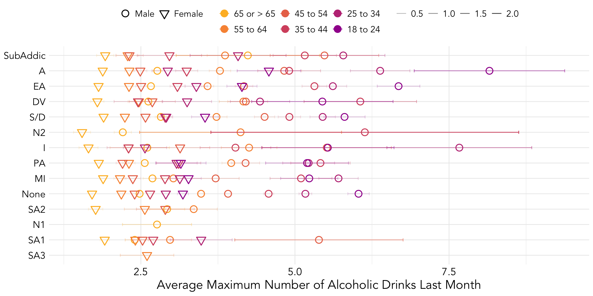
Note. SA2 = sexual abuse 2 (i.e., forced to sexually touch abuser). A = alcohol misuse in household. SubAddic = substance addiction in the household. PA = physical abuse. SA1 = sexual abuse 1 (i.e., molestation). None = respondent did not report any ACE. S/D = parental separation or divorce. MI = mental illness in the household. EA = emotional abuse. I = incarcerated household member. SA3 = sexual abuse 3 (i.e., rape). N1 = neglect 1 (i.e., no adult in household who made them feel safe and protected). N2 = neglect 2 (i.e., no adult in household who tried hard to make sure their basic needs were met). DV = domestic violence in the household.
Figure 19
History of 2 Adverse Childhood Events and Average Maximum Drinks (last month)
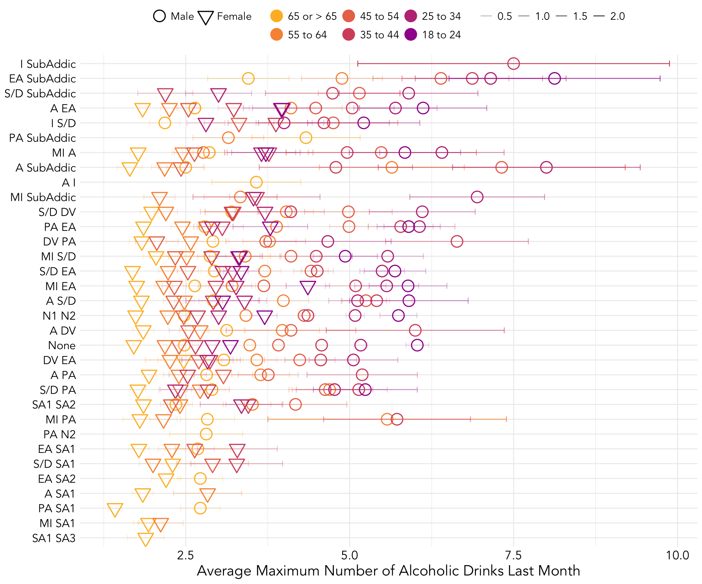
Note. SA2 = sexual abuse 2 (i.e., forced to sexually touch abuser). A = alcohol misuse in household. SubAddic = substance addiction in the household. PA = physical abuse. SA1 = sexual abuse 1 (i.e., molestation). None = respondent did not report any ACE. S/D = parental separation or divorce. MI = mental illness in the household. EA = emotional abuse. I = incarcerated household member. SA3 = sexual abuse 3 (i.e., rape). N1 = neglect 1 (i.e., no adult in household who made them feel safe and protected). N2 = neglect 2 (i.e., no adult in household who tried hard to make sure their basic needs were met). DV = domestic violence in the household.
Figure 20
History of 3 Adverse Childhood Events and Average Maximum Drinks (last month)
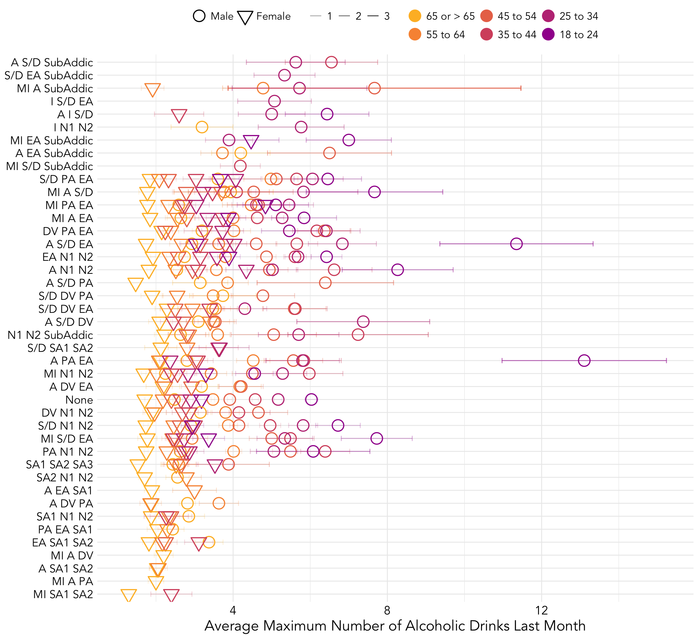
Note. SA2 = sexual abuse 2 (i.e., forced to sexually touch abuser). A = alcohol misuse in household. SubAddic = substance addiction in the household. PA = physical abuse. SA1 = sexual abuse 1 (i.e., molestation). None = respondent did not report any ACE. S/D = parental separation or divorce. MI = mental illness in the household. EA = emotional abuse. I = incarcerated household member. SA3 = sexual abuse 3 (i.e., rape). N1 = neglect 1 (i.e., no adult in household who made them feel safe and protected). N2 = neglect 2 (i.e., no adult in household who tried hard to make sure their basic needs were met). DV = domestic violence in the household.
Figure 21
History of 4 Adverse Childhood Events and Average Maximum Drinks (last month)
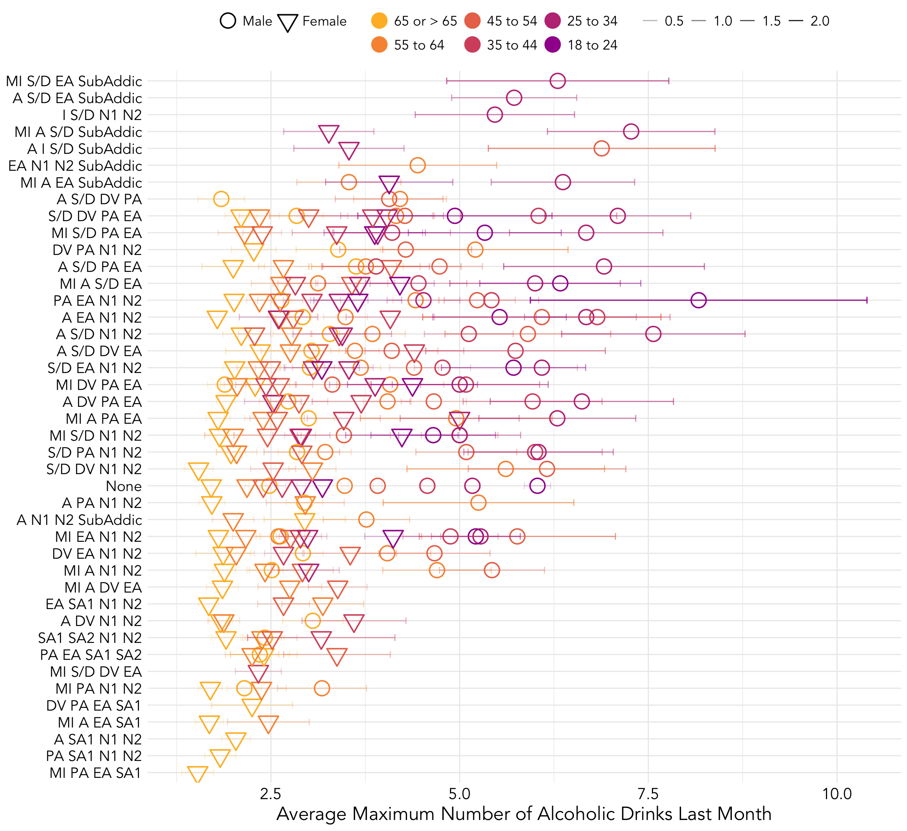
Note. SA2 = sexual abuse 2 (i.e., forced to sexually touch abuser). A = alcohol misuse in household. SubAddic = substance addiction in the household. PA = physical abuse. SA1 = sexual abuse 1 (i.e., molestation). None = respondent did not report any ACE. S/D = parental separation or divorce. MI = mental illness in the household. EA = emotional abuse. I = incarcerated household member. SA3 = sexual abuse 3 (i.e., rape). N1 = neglect 1 (i.e., no adult in household who made them feel safe and protected). N2 = neglect 2 (i.e., no adult in household who tried hard to make sure their basic needs were met). DV = domestic violence in the household.
Figure 22
History of 5 Adverse Childhood Events and Average Maximum Drinks (last month)
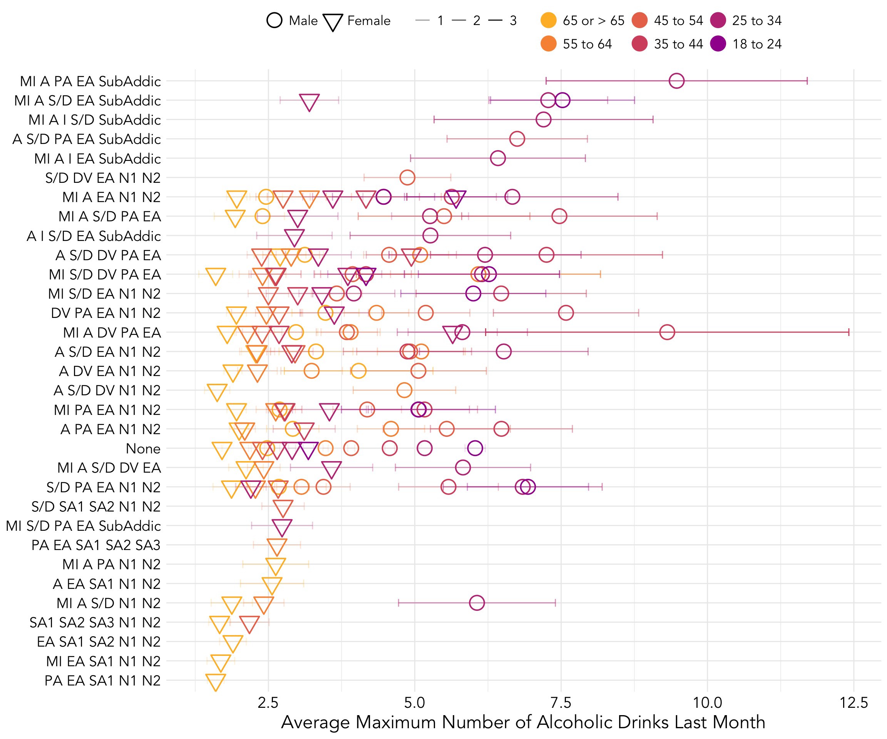
Note. SA2 = sexual abuse 2 (i.e., forced to sexually touch abuser). A = alcohol misuse in household. SubAddic = substance addiction in the household. PA = physical abuse. SA1 = sexual abuse 1 (i.e., molestation). None = respondent did not report any ACE. S/D = parental separation or divorce. MI = mental illness in the household. EA = emotional abuse. I = incarcerated household member. SA3 = sexual abuse 3 (i.e., rape). N1 = neglect 1 (i.e., no adult in household who made them feel safe and protected). N2 = neglect 2 (i.e., no adult in household who tried hard to make sure their basic needs were met). DV = domestic violence in the household.
Figure 23
History of 6 or more Adverse Childhood Events and Average Maximum Drinks (last month)
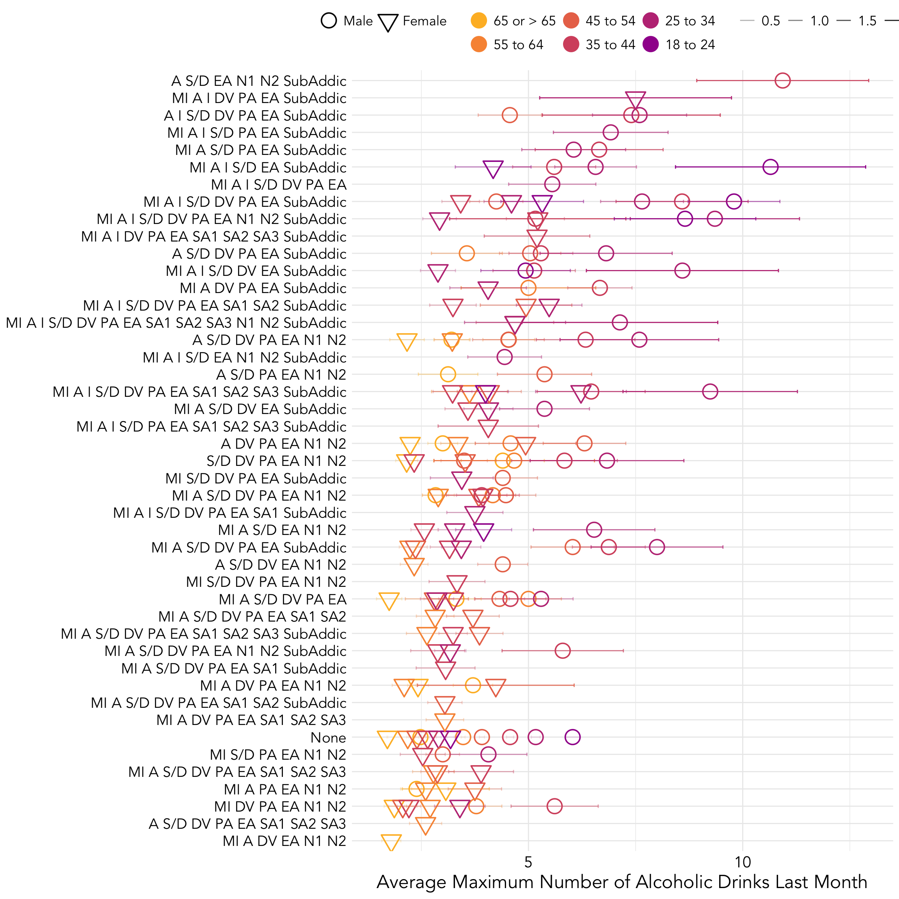
Note. SA2 = sexual abuse 2 (i.e., forced to sexually touch abuser). A = alcohol misuse in household. SubAddic = substance addiction in the household. PA = physical abuse. SA1 = sexual abuse 1 (i.e., molestation). None = respondent did not report any ACE. S/D = parental separation or divorce. MI = mental illness in the household. EA = emotional abuse. I = incarcerated household member. SA3 = sexual abuse 3 (i.e., rape). N1 = neglect 1 (i.e., no adult in household who made them feel safe and protected). N2 = neglect 2 (i.e., no adult in household who tried hard to make sure their basic needs were met). DV = domestic violence in the household.
Conclusion
The research presented demonstrates that the type of adversity matters when discussing risk for excessive alcohol consumption. In addition, when grouping adversities by the number reported, there is a clear distinction between ACE groupings indicating that grouping by number experienced is not an accurate way to determine those most at risk for excessive alcohol consumption. There was also some evidence that those with a history of specific ACEs are shown to engage in less overall alcohol consumption which has not previously been reported in the literature.
Future research investigating ACEs should focus on the type of adversities and interaction between adversities rather than adding the number of ACEs experienced together and using that as the dependent variable of interest. As shown, a lot of information is lost when this is done because long-term effects from parental separation or divorce are not comparable to those who had a household member with a substance addiction.
The data used and conclusions made here are based on self-reported data with a large potential to be skewed because ACEs is a sensitive topic, especially to those who have a history of adversity, where individuals are less likely to report them with a stranger. This is the only survey in the United States that collects information on ACEs yearly which is why it was used in this analysis. The resulted presented here are indicated as increased, decreased, or no difference in risk from the intercept group, but there is a potential that there are confounding variables because we are only accounting for this aspect of the respondents life history which is not the only variable that could effect long-term risk for excessive alcohol consumption. Visualizations try to evaluate a plethora of variables at one time which has the potential to be confusing/difficult for people to grasp what is being shown. It is also impossible with the current data to determine if age is impacting alcohol consumption as a measure of time passing or if generations are experiencing different effects.
References
Dube, S. R., Felitti, V. J., Dong, M., Chapman, D. P., Giles, W. H., & Anda, R. F. (2003). Childhood abuse, neglect, and household dysfunction and the risk of illicit drug use:The adverse childhood experiences study. Pediatrics, 111(3), 564–572. https://doi.org/10.1542/peds.111.3.564
Felitti, V. J., Anda, R. F., Nordenberg, D., Williamson, D. F., Spitz, A. M., Edwards, V., Koss, M. P., & Marks, J. S. (2019). Reprint of: Relationship of childhood abuse and household dysfunction to many of the leading causes of death in adults: The adverse childhood experiences (ACE) study. American Journal of Preventive Medicine, 56(6), 774–786. https://doi.org/10.1016/j.amepre.2019.04.001
Gomez, B., Peh, C. X., Cheok, C., & Guo, S. (2018). Adverse childhood experiences and illicit drug use in adolescents: Findings from a national addictions treatment population in Singapore. Journal of Substance Use, 23(1), 86–91. https://doi.org/10.1080/14659891.2017.1348558
Guarino, H., Mateu-Gelabert, P., Quinn, K., Sirikantraporn, S., Ruggles, K. V., Syckes, C., Goodbody, E., Jessell, L., & Friedman, S. R. (2021). Adverse childhood experiences predict early initiation of opioid use behaviors. Frontiers in Sociology, 6, 620395. https://doi.org/10.3389/fsoc.2021.620395
Kim, S. T., Hwang, S. S., Kim, H. W., Hwang, E. H., Cho, J., Kang, J. I., & Kim, S. J. (2018). Multidimensional impulsivity as a mediator of early life stress and alcohol dependence. Scientific Reports, 8(1), 4104. https://doi.org/10.1038/s41598-018-22474-8
Loudermilk, E., Loudermilk, K., Obenauer, J., & Quinn, M. A. (2018). Impact of adverse childhood experiences (ACEs) on adult alcohol consumption behaviors. Child Abuse & Neglect, 86, 368–374. https://doi.org/10.1016/j.chiabu.2018.08.006
Merrick, M. T., Ford, D. C., Ports, K. A., & Guinn, A. S. (2018). Prevalence of Adverse Childhood Experiences From the 2011-2014 Behavioral Risk Factor Surveillance System in 23 States. JAMA Pediatrics, 172(11), 1038. https://doi.org/10.1001/jamapediatrics.2018.2537
Pilowsky, D. J., Keyes, K. M., & Hasin, D. S. (2009). Adverse childhood events and lifetime alcohol dependence. American Journal of Public Health, 99(2), 258–263. https://doi.org/10.2105/AJPH.2008.139006
Sharma, A., & Sacco, P. (2015). Adverse Childhood Experiences and Gambling: Results From a National Survey. Journal of Social Work Practice in the Addictions, 15(1), 25–43. https://doi.org/10.1080/1533256X.2015.996502
Shin, S. H., McDonald, S. E., & Conley, D. (2018). Profiles of adverse childhood experiences and impulsivity. Child Abuse & Neglect, 85, 118–126. https://doi.org/10.1016/j.chiabu.2018.07.028
Stein, M. D., Conti, M. T., Kenney, S., Anderson, B. J., Flori, J. N., Risi, M. M., & Bailey, G. L. (2017). Adverse childhood experience effects on opioid use initiation, injection drug use, and overdose among persons with opioid use disorder. Drug and Alcohol Dependence, 179, 325–329. https://doi.org/10.1016/j.drugalcdep.2017.07.007
Strine, T. (2012). Associations between adverse childhood experiences, psychological distress, and adult alcohol problems. American Journal of Health Behavior, 36(3). https://doi.org/10.5993/AJHB.36.3.11